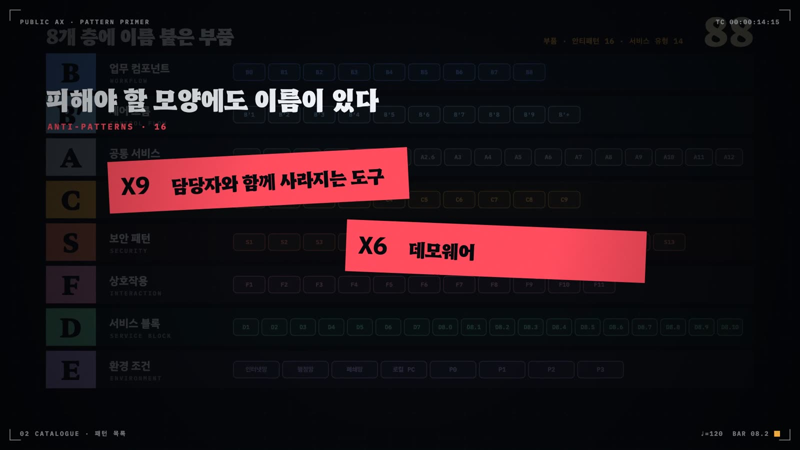

안티패턴
부품을 모두 갖춘 듯 보여도 조립이 함정에 빠지면 서비스는 무너진다. 열여섯 개 안티패턴은 각각 빠진 부품 하나를 가리키고, 그 부품을 끼우는 것이 리팩터링이다.
- X1~X16을 뿌리가 같은 여섯 갈래로 묶고 갈래마다 빠진 부품을 말한다
- 과제 검토 순서에 맞춘 안티패턴 점검 질문을 쓴다
- 안티패턴, 유형별 필수 부품 결손, planned 상태, 후보 패턴을 구분한다
- 환경이 바뀌면 정상 부품도 안티패턴이 된다는 퇴출 규칙을 설명한다
보고서 마지막 장에 "AI 기반 자율 운영 체계 구축 완료"라는 문장이 있다. 위험도 분기, 롤백, 6개월 주기 재학습이 아키텍처 그림에 모두 그려져 있다. 그런데 운영 기간 중 분기가 몇 건을 자동 처리했는지, 롤백이 한 번이라도 실행됐는지, 재학습이 언제 돌았는지는 어디에도 없다. 검토자는 이 과제를 어느 단계로 읽어야 하는가.
카탈로그는 이런 모양에 이름을 붙였다. X2설계도만 있는 운영이다. 안티패턴(anti-pattern)은 반복해서 나타나는 잘못된 조립이다. 패턴처럼 이름과 증상과 해법을 갖는데, 해법은 대개 빠진 부품을 끼우는 일이다. 카탈로그 §11은 사례 태깅에서 되풀이된 함정을 X1~X14로 적었다. v0.6에서는 태깅 피드백에서 따로 이름을 붙여 달라는 요청이 올라온 두 함정을 X15·X16으로 더했다(R9).
열여섯 함정, 여섯 갈래
X 번호는 발견된 순서일 뿐 서로의 관계를 말하지 않는다. 증상을 뿌리로 묶으면 여섯 갈래가 나온다. 그림 14.1은 갈래마다 함정과 그 함정이 공통으로 빠뜨린 부품을 한 장에 놓는다.

첫 갈래는 AI를 붙였는데 사람과 AI의 일 나누기가 바뀌지 않은 경우다. X1AI 스티커는 기존 화면에 요약 버튼을 달았을 뿐이고, X8MCP 서버 개수 세기는 서버를 만든 수를 성과로 센다. 둘 다 뿌리는 탑재를 성과로 착각하는 데 있다. 두 번째 갈래는 증거의 문제다. 설계만 있거나(X2), 배포 시점의 정확도만 있거나(X5), 벤더의 성과표를 빌려 오거나(X15), 실데이터와 망 환경이 없다(X6). 세 번째 갈래는 한 부서나 한 사람, 한 모델에 묶여 옮겨 가지 못하는 도구다.
카탈로그 §7.2 진행 경로의 순서를 건너뛴 함정들이 네 번째 갈래다. 평가 세트 없이 검색을 붙이고, 단일 에이전트가 되기 전에 멀티에이전트를 만들고, 반복 상한 없이 비평 루프를 돌린다. 권한과 적대자를 설계 전제로 두지 않으면 다섯 번째 갈래에 빠진다. 여섯 번째인 X14재생할 수 없는 사고는 혼자 한 갈래를 이룬다. 다른 갈래의 함정은 사고를 일으키지만, X14는 사고가 난 뒤에 무엇이 일어났는지 아무도 말하지 못하게 만든다.
Gulli(2025)에도 같은 경고가 여러 장에 흩어져 있다. 6장은 절차가 알려져 있고 되풀이되는 일이라면 동적 계획 대신 고정된 흐름으로 두라고 권하는데, X11처음부터 멀티에이전트를 피하라는 말과 같다. 같은 책 4장은 생성자와 비평가를 나누면 지연과 비용이 늘어난다고 적는데, 반복 상한을 두는 근거가 이것이다. 18장의 최소 권한과 체크포인트는 X7·X13의 교정과 겹친다. 19장은 운영 중에 정확도와 비용을 재고, 최종 답과 함께 에이전트가 거친 경로 전체도 평가하라고 요구한다. 이 요구를 빠뜨린 조립이 X5·X10·X14로 나타난다.
점검 순서
안티패턴은 과제를 다 조립한 뒤 한꺼번에 찾기보다 검토 순서에 맞춰 물을 때 잘 걸린다. 그림 14.2는 §7.1 적용 절차의 순서를 따라 질문 일곱 개를 놓은 것이다. 접점과 환경 조건을 먼저 묻고, 역할 분담과 운영 증거를 묻고, 마지막에 권한과 기록을 묻는다. 질문에 "아니요"가 나오면 오른쪽의 함정을 의심한다.
Q1이 맨 앞에 오는 까닭은 환경 조건이 비어 있으면 그 뒤의 필수 부품 판정이 모두 막히기 때문이다. 권한 범위(E4)를 모르면 C8권한 경계·킬스위치가 필요한지 판단할 수 없고, 데이터 등급(E5)을 모르면 C5가드레일 필터가 필수인지 알 수 없다. Q6은 조건부 질문이다. 카탈로그의 신뢰 불가 입력 규칙은 E4가 P2 이상이면서 기관 밖에서 작성된 입력을 읽는 부품에만 S4행동 선택기, S5계획 후 실행·코드 후 실행, S6격리 LLM·맵리듀스 중 하나를 요구한다. 탐지 필터 하나만 두고 이 질문에 "예"라고 답한 과제가 바로 X13도구 출력이 지시가 되는 에이전트다.
안티패턴이 아닌 것
모든 빈칸이 안티패턴은 아니다. 표 14.1은 검토 보고서에서 안티패턴과 자주 섞이는 세 가지를 나란히 놓는다. 그중 판정을 가장 크게 바꾸는 것은 planned다. 부품을 예정으로 정직하게 적고 AX 단계도 그에 맞게 낮춰 주장한 과제는 X2설계도만 있는 운영이 아니다. 함정은 예정을 운영으로 보고할 때 생긴다.
| 구분 | 무엇인가 | 누가 어떻게 기록하나 | 예 |
|---|---|---|---|
| 안티패턴 X | 조립이나 판단이 틀린 형태. 빠진 부품을 있는 것처럼 보고하거나 구조 자체가 위험하다 | 태거가 원문 신호로 anti_patterns에 적는다 | 상용 API 직접 호출에 대체 경로 없음(X4) |
| 필수 부품 결손 | 서비스 유형이 요구하는 부품 중 조립에 없는 것 | 검증기가 missing_required에 자동으로 적는다 | 유형 1 대민 상담에 C9 평가 세트 없음 |
| planned | 설계·예정 단계로 정직하게 적은 부품 | 구현 상태 세 단계 중 하나(R3·R12) | 재학습 주기를 예정으로 적고 Enabled를 주장 |
| 후보 패턴 | 독립 사용례가 1~2건이라 확립 전인 정상 부품 | 등재 상태(Rule of Three, §4.2) | S12 데이터 비도달 설계 |
반대 방향의 경계도 있다. 정상 부품이 안티패턴으로 옮겨 가는 경우다. 카탈로그 §4.2의 퇴출 규칙은 환경이 바뀌어 문제가 사라지면 그 패턴을 안티패턴 목록으로 옮긴다고 정한다. 대표 예가 B8레거시 오버레이다(그림 14.3). API가 닫힌 표준 업무 시스템 위에 브라우저 확장을 얹는 것은 지금은 합리적인 우회로다. 그러나 표준 시스템에 정식 API나 A8MCP 서버·호스트가 열리는 순간, 화면 구조에 기대는 오버레이는 개편 때마다 깨지는 부채가 된다.
안티패턴 선택표
표 14.2는 열여섯 함정마다 의심 신호와 빠진 부품을 한 줄로 적었다. 리팩터링 전후 조립도와 사례는 이어지는 함정별 프로필에 있다.
| id | 이름 | 함정 한 줄 | 의심할 때 · 빠진 부품 |
|---|---|---|---|
| X1 | AI 스티커 | 화면에 AI 버튼만 붙고 업무 순서는 그대로다 | 처리 단계·결재선 변화 서술이 없을 때 · B 역할 분담 |
| X2 | 설계도만 있는 운영 | 분기·롤백·재학습이 예정으로만 나온다 | 실행 횟수·날짜가 없을 때 · C2·C3·C6 운영 증거 |
| X3 | 부서마다 챗봇 | 과제마다 모델·벡터DB를 따로 만든다 | 같은 기관에 API 키가 여럿일 때 · A2·A3 Provider |
| X4 | 단일 모델 인질 | 상용 API 하나가 멈추면 전부 멈춘다 | 상용 API인데 대체 경로가 없을 때 · A2, C7 |
| X5 | 성능표만 있는 학습 | 배포 후 수정률을 아무도 모으지 않는다 | 정확도만 있고 운영 지표가 없을 때 · C4, C6 |
| X6 | 데모웨어 | 시연은 되는데 현장에 놓을 수 없다 | E 조건이 미확인일 때 · A1·A4, E 기재 |
| X7 | 도구 설명 ≠ 실제 권한 | 조회라던 도구가 쓰기 권한을 가졌다 | 읽기·쓰기가 같은 토큰일 때 · C8, A8 6축 검증 |
| X8 | MCP 서버 개수 세기 | 서버 수가 성과가 된다 | 호출 지표가 없을 때 · B 산출물, C4 |
| X9 | 담당자와 함께 사라지는 도구 | 만든 사람이 떠나면 도구도 멈춘다 | 라이선스·저장소가 없을 때 · A7 라이선스, A3 공공 깃랩 |
| X10 | 평가 없는 RAG, RAG 없는 튜닝 | 느낌으로 배포하고 튜닝으로 우회한다 | 업무 질문·정답 세트가 없을 때 · C9 |
| X11 | 처음부터 멀티에이전트 | 분리되지 않는 일을 여러 에이전트가 나눈다 | 단일 구성과 비교 기록이 없을 때 · B′ 원형 선택 규칙 |
| X12 | 상한 없는 반영 루프 | 비평 루프가 토큰만 태운다 | 최대 반복이 없을 때 · B′5·B′6 반복 상한, A2 비용 지표 |
| X13 | 도구 출력이 지시가 되는 에이전트 | 읽은 문장이 새 명령이 된다 | P2 이상 + 외부 입력에 S4·S5·S6이 없을 때 · S4·S5·S6 중 하나 |
| X14 | 재생할 수 없는 사고 | 사고의 순서를 아무도 복원하지 못한다 | 건별 호출 기록이 없을 때 · S10, C4 |
| X15 | 빌린 성과표 | 벤더 KPI를 자체 실측 성과로 보고한다 | 수치 출처가 벤더 자료일 때 · C9 자체 평가 세트, C4 |
| X16 | 기준을 노출하는 위조 탐지 | 판정 근거가 위조범에게 기준을 알려 준다 | 제출자 화면에 세부 근거가 보일 때 · 근거 은닉(F9 관리자 전용) |
PAX 557건에서 걸린 함정
안티패턴이 붙은 PAX 사례는 태깅 557건 중 37건에 그친다. 가장 많은 것은 X9담당자와 함께 사라지는 도구로 15건이고, X10이 6건, X6데모웨어와 X1이 각 4건, X2·X4가 각 3건, X13이 2건, X7·X8이 각 1건이다. 나머지 일곱 함정은 한 번도 태그되지 않았다.
이 숫자를 함정이 드물다는 뜻으로 읽으면 안 된다. PAX 태깅은 원장 요약과 README 같은 공개 자료만 정독했고, 안티패턴은 원문에 신호가 분명할 때만 붙였다. 그런데도 X9가 1위인 데는 이유가 있다. PAX 사례 다수는 공직자 개인이 AI 코딩 도구로 만든 것이다. PAX 원장(2026년 10월 13일 기준) 557건 가운데 라이선스를 밝히지 않은 것이 215건이다. 반대로 권한·적대자 갈래가 2건뿐인 것은 시스템 쓰기 권한(P2)으로 태깅된 사례가 26건에 그쳐 Q6을 물을 대상 자체가 적기 때문이다. 에이전트가 쓰기 권한을 얻기 시작하면 이 갈래부터 늘어날 것으로 보인다.
핵심 정리
- 안티패턴은 반복해서 나타나는 잘못된 조립이고, 해법은 카탈로그 §11이 적은 빠진 부품을 끼우는 일이다.
- X1~X16은 역할 분담, 운영 증거, 공유·이식, 진행 경로, 권한·적대자, 기록의 여섯 갈래로 묶인다. 같은 갈래의 함정은 함께 나타나기 쉽다.
- 점검은 검토 순서를 따른다. 환경 조건(Q1)을 먼저 묻고 권한·기록(Q6·Q7)을 마지막에 묻는다. Q6은 P2 이상이면서 외부 입력을 읽는 과제에만 해당한다.
- 예정을 예정으로 적은 planned 부품, 검증기가 적는 필수 부품 결손, 사용례가 적은 후보 패턴은 안티패턴이 아니다.
- 환경이 바뀌면 정상 부품도 퇴출 대상이 된다. B8 레거시 오버레이는 표준 시스템에 A8이 열리는 순간 그렇다.
- PAX 557건 중 37건에 안티패턴이 붙었고 X9가 15건으로 가장 많다. 개인 제작 도구가 많은 아카이브의 성격이 그대로 드러난다.
패턴 프로필
요구어떻게 하면 기존 화면에 AI 기능을 덧붙이는 데 그치지 않고, 업무 산출물과 사람·AI의 역할 분담이 실제로 바뀌게 할 수 있는가?
기존 화면에 요약·챗봇 버튼만 붙이고 업무 순서와 사람·AI의 역할 분담은 그대로 두어, AI가 있어도 업무 산출물이 바뀌지 않는 함정이다.
공공AX 패턴 성좌의 디렉터리에서 X1 보기 ↗이 부품을 쓰는 PAX 사례 목록, 같이 쓰이는 부품, 3D 위치
01왜 빠지는가
AI 도입 실적을 빨리 보여야 하는데 업무 흐름을 바꾸려면 결재선·시스템·담당자 역할을 모두 건드려야 한다. 기존 화면 옆에 요약 버튼이나 범용 챗봇을 붙이는 것이 가장 싸고 빠르다. 'AI를 탑재했다'는 문장도 곧바로 실적 보고에 들어간다. PAX 기준서가 '기능 탑재가 아니라 실제 업무 산출물이 관건'이라고 못 박은 이유가 이것이다.
맥락. 기존 행정정보시스템·업무 포털에 AI 기능을 추가하는 과제, 특히 성과 지표가 'AI 기능 탑재 여부'나 호출 수로 잡힌 과제. R24에 따라 AI 런타임이 전혀 없는 순수 행정정보시스템도 이 태그(AI 무관)로 표기한다.
힘(forces) — 서로 당기는 요구
- 빠른 도입 실적 vs 업무 흐름 재설계 비용
- 기존 시스템 무변경(안정성) vs 산출물 단위의 역할 분담
- 'AI 탑재' 홍보 효과 vs 실제 처리시간·수정률 개선
02리팩터링 해법
먼저 가치 흐름 규칙(R1)으로 사람 또는 국민이 최종으로 받는 핵심 산출물을 정하고, 그 산출물을 AI가 어떤 모양으로 분담할지 B 업무 컴포넌트를 하나 고른다(초안→사람 확정이면 B1, 근거 접지 답변이면 B3, 서류 추출이면 B4). 사람이 확정하는 지점은 C1 검토 큐로, 이용자가 고쳐 확정하는 면은 F2 편집 가능한 출력으로 명시한다. 흐름이 바뀌었는지는 C4 감사 로그·지표의 처리시간·수정률로 잰다. AI 런타임이 전혀 없는 행정정보시스템이라면 AI로 포장하지 말고 R24대로 B0·service_type 0·platform 공란·X1(AI 무관)으로 정직하게 분류한다.
변형
| 변형 | 설명 |
|---|---|
| 요약 버튼형 | 기존 화면에 '요약' 버튼만 추가하고 결재·처리 단계는 그대로 |
| 범용 챗봇 부착형 | 업무 데이터와 연결되지 않은 범용 대화창을 포털에 부착 |
| AI 무관 행정시스템(R24) | AI 런타임이 전혀 없는 순수 행정정보시스템(예: 교육·인증 학습관리시스템). B0·service_type 0·platform 공란과 함께 X1(AI 무관)로 표기 |
03진단과 교정
- 과제가 최종으로 내놓는 산출물(답변·공문 초안·판정·통지 등)을 한 문장으로 적고, AI 도입 전후의 처리 단계와 담당자 역할을 나란히 그린다.
- 전후 그림이 같으면 X1로 진단하고, 산출물 기준으로 B 업무 컴포넌트 하나를 다시 고른다(R1 가치 흐름 규칙).
- 사람이 확정하는 지점을 C1으로, 이용자가 고쳐 쓰는 면을 F2로 설계해 역할 분담을 화면에 드러낸다.
- C4로 처리시간·수정률을 도입 전 기준선과 비교해 흐름이 바뀌었는지 확인한다.
- AI 런타임이 없는 시스템이면 재설계 대신 R24 표기(B0·유형 0·platform 공란·X1)로 분류를 바로잡는다.
점검 질문
- AI 도입 전후 처리 단계·담당자 역할의 차이를 한 장으로 보여 줄 수 있는가
- AI가 만드는 산출물과 사람이 확정하는 지점이 명시되어 있는가
- 처리시간·수정률 같은 산출물 지표가 도입 전 기준선과 함께 있는가
- AI 런타임이 없는데 AI 과제로 보고하고 있지 않은가
환경 조건. 환경 조건과 무관하게 생긴다. 다만 E4가 P0~P1(읽기·산출물 생성)에 머물고 기존 시스템 쓰기 연동이 없는 과제에서 흔하다. E 조건을 먼저 기록하면 AI가 어느 산출물에 닿는지가 드러나 진단이 쉬워진다.
(교정 후) D8.3 → B1 → C1 → F2 · C1 → C4 (수정률·처리시간). 굵은 테두리가 이 패턴이다.04매력과 대가
당장 얻는 것
- 기존 시스템을 건드리지 않아 도입이 빠르고 장애 위험이 낮다
- 'AI 탑재' 실적을 곧바로 보고한다
치르는 대가
- 처리시간·수정률이 개선되지 않아 투자 효과를 증명할 수 없다
- AX 단계가 기존 흐름에 묶여 올라가지 않는다
- AI 무관 시스템이 섞이면 카탈로그 부품 분포 해석이 왜곡된다(R24 각주 사유)
이런 징후가 보이면
- AI 기능이 추가됐다는 서술은 있으나 처리 단계 수·결재선·담당자 역할이 바뀌었다는 서술이 없다
- 성과 지표가 AI 호출 수·이용 만족도뿐이고 처리시간·수정률 같은 산출물 지표가 없다
- 챗봇이 기관 업무 데이터·시스템과 연결되지 않은 범용 대화에 머문다
- AI 런타임이 전혀 없는 행정정보시스템이 AX 과제로 분류되어 있다(R24)
겉보기만 비슷한 경우
- B1 코파일럿처럼 AI가 초안을 만들고 사람이 확정하는 역할 분담이 실제로 서술된 경우
- B8 레거시 오버레이처럼 표준 시스템 위에 얹었지만 업무 산출물을 AI가 만들어 내는 경우
- B0 결정적 도구가 반복 취합 업무를 실제로 줄이고 AI로 포장하지 않은 경우(Ready 부품으로 정직하게 분류된 경우)
05판정
식별 신호
| 헷갈리는 이웃 | 가르는 규칙 |
|---|---|
| B1코파일럿 | AI 초안→사람 확정 구조가 서술되면 B1이지 X1이 아니다. X1은 역할 분담 자체가 없을 때. |
| B0결정적 도구 | B0 결정적 도구는 AI로 포장하지 않는 한 X1이 아니다. R24의 X1(AI 무관)은 AI 런타임이 전혀 없는 순수 행정정보시스템에만 붙인다. |
| X6데모웨어 | X6은 현장에 놓을 수 없는 시연, X1은 현장에 놓였지만 흐름이 안 바뀐 기능. |
06관계
| 패턴 | 관계 |
|---|---|
| B1코파일럿 | 대체 — 초안→사람 확정으로 산출물 역할을 나누는 교정 목표 |
| C1검토 큐 | 교정에 끼울 자리 — 사람이 확정하는 지점 |
| B0결정적 도구 | 정직한 분류 — AI 런타임이 없으면 B0 Ready 부품으로(R24) |
| C4감사 로그·지표 | 기록처 — 흐름 변화의 증거(처리시간·수정률) |
| X8MCP 서버 개수 세기 | 이웃 안티패턴 — 개수·탑재를 성과로 세는 같은 뿌리 |
의존. B1코파일럿 C1검토 큐 C4감사 로그·지표
빠지기 쉬운 함정. X6데모웨어 X8MCP 서버 개수 세기
출처·문헌: 카탈로그 §11 X1 · 카탈로그 §0 v0.7.1 개정표 R24 · 분류기준 §11, R1, R24 · PAX 기준서 '기능 탑재가 아니라 실제 업무 산출물이 관건' · PAX 원칙 '도구를 호출해도 기존 흐름이 그대로면 Enabled'
요구어떻게 하면 운영 부품을 설계도에만 그려 넣고 운영 체계를 갖췄다고 보고하는 일에 빠지지 않을 수 있는가?
위험도 분기·롤백·재학습 같은 운영 부품이 '예정'·'설계됨'으로만 등장하고 운영(시범 운영 포함) 기간에 한 번도 실행되지 않은 채 운영 체계를 갖췄다고 보고하는 함정이다.
공공AX 패턴 성좌의 디렉터리에서 X2 보기 ↗이 부품을 쓰는 PAX 사례 목록, 같이 쓰이는 부품, 3D 위치
01왜 빠지는가
공개 소개 자료에 운영 체계 설계도를 그려 넣는 것은 쉽지만, 실제로 분기·롤백·재학습을 한 사이클 돌리려면 운영 데이터·담당자·시간이 필요하다. 운영(시범 운영 포함) 기간이 짧고 AX 점수가 설계 서술에도 반응하던 시기(v0.5)에는 설계만으로 present를 받을 수 있었다. PAX 557건 태깅에서 X2는 3건이다.
맥락. C2 위험도 라우터·C3 상태 머신·C6 환류·C7 폴백을 공개 자료(원장 요약·README·화면)에 서술한 시범 과제. 특히 AI-Native를 지향한다고 쓰면서 운영(시범 운영 포함) 기간이 짧은 과제.
힘(forces) — 서로 당기는 요구
- 소개 문서의 완결성 vs 실제 운영 증거 확보 비용
- 짧은 운영 기간 vs 완결된 실행 사이클(트리거→처리→결과 확인)
- 상위 AX 단계 주장 vs 증거 수준에 맞춘 정직한 기록
02리팩터링 해법
모든 운영 부품을 R3의 3단계(present·implemented·planned)로 정직하게 기록하고, 가장 중요한 부품부터 운영 기간 안에 완결된 실행 사이클을 한 번 이상 돌린다(R12). 먼저 C4 감사 로그·지표를 켜서 기록처를 만들고, C2는 실제 분기 비율을 실측하고, C3는 롤백·재처리를 한 건 이상 실행하고, C6는 재학습·기준 개정을 한 번 돌리고, C7은 장애 주입으로 전환을 한 번 실행한다. 실행하지 못한 부품은 planned로 내리고 transition.stage를 '미착수'나 '구현·미배포'로 적어 설계와 운영을 구분한다.
변형
| 변형 | 설명 |
|---|---|
| 예정형 | '향후 재학습 예정', '롤백 기능 도입 계획'처럼 미래형으로만 서술 |
| 설계됨형 | '~하도록 설계됨', '지속적으로 개선함'처럼 진행형·의지형 서술. 최대 implemented(R12) |
| 화면만 있는 형 | 스크린샷·코드 존재만 있고 실행 기록이 없음. implemented의 증거일 뿐 present가 아님(R12) |
03진단과 교정
- 공개 자료의 운영 부품 서술을 모두 뽑아 각각에 R3 3단계(present·implemented·planned)를 붙인다.
- present 주장마다 '트리거→처리→결과 확인'의 완결 사이클 서술이 있는지 확인하고, 없으면 implemented나 planned로 내린다(R12).
- planned·implemented가 대부분이면 X2로 진단하고, C4 기록처부터 켠다.
- 서비스 유형의 필수 부품 중 하나를 골라 운영 기간 안에 한 사이클을 실제로 실행하고 로그를 남긴다.
- transition.stage를 '미착수'·'구현·미배포'·'부서 공유' 중 실제에 맞게 적는다.
점검 질문
- present로 적은 운영 부품마다 실행 날짜·건수·결과가 있는가
- '설계됨'·'예정' 서술을 implemented·planned로 낮춰 적었는가
- C4에 실행 사이클의 로그가 남는가
- AX 단계 주장이 운영 증거 수준과 맞는가
환경 조건. E4가 P2 이상이면 C2·C3·C4·C8이 필수이고, E2가 상용 API면 C7이 필수라 이 함정의 대가가 커진다. 운영 기간이 짧은 과제일수록 흔하다.
(교정 후) B4 → C2 (분기 실측) → C1 → C3 (롤백 1회 실행) · C1 → C4 → C6 (재학습 1회). 굵은 테두리가 이 패턴이다.04매력과 대가
당장 얻는 것
- 소개 문서가 완결되어 보이고 상위 AX 단계를 주장하기 쉽다
- 운영 데이터·담당자 없이도 문서를 채울 수 있다
치르는 대가
- 실제 장애·오판 때 분기·롤백이 작동하는지 아무도 모른다
- 평가에서 present가 planned로 강등되어 AX 점수가 내려간다(First 이상은 설계 문서로 인정하지 않음)
- 구현됐지만 미운영인 과제와 설계만 있는 과제가 구분되지 않는다
이런 징후가 보이면
- C2·C3·C6·C7이 '예정·계획·검토 중·설계됨'으로만 등장한다
- 운영 부품 서술은 많은데 운영 기간 중 실행 횟수·날짜·결과가 하나도 없다
- 스크린샷·아키텍처 그림은 있으나 전환·롤백·재학습 로그가 없다
- AI-Native를 주장하면서 운영 증거가 없다
겉보기만 비슷한 경우
- 부품을 planned로 정직하게 적고 AX 단계도 그에 맞게 낮춰 주장한 경우(계획 서술 자체는 함정이 아니다)
- 구현이 확인되고 실측만 남은 implemented 부품이 일부 있는 경우
- 완결된 실행 사이클이 한 번이라도 원문에 서술된 경우
05판정
식별 신호
| 헷갈리는 이웃 | 가르는 규칙 |
|---|---|
| C6환류 파이프라인 | C6 planned는 부품 하나의 상태 판정, X2는 운영 부품 전반이 설계에 머문 과제 수준 판정. C6 planned 하나만으로 X2를 붙이지 않는다. |
| X6데모웨어 | X6은 실데이터·권한·망 환경이 없어 현장에 놓을 수 없는 것, X2는 현장에 놓였어도 통제 부품이 돌아간 기록이 없는 것. |
| X5성능표만 있는 학습 | X5는 정확도는 있고 배포 후 환류가 없는 것. X2는 분기·롤백·재학습 전반이 설계에만 있는 것. |
06관계
| 패턴 | 관계 |
|---|---|
| C4감사 로그·지표 | 선행 — 실행 사이클의 증거가 쌓일 기록처 |
| C2위험도 라우터 | 교정 대상 — 분기 비율 실측 |
| C3상태 머신·롤백 | 교정 대상 — 롤백·재처리 1회 실행 |
| C6환류 파이프라인 | 교정 대상 — 재학습·기준 개정 1회 사이클 |
| C7폴백 스위치 | 교정 대상 — 장애 주입으로 전환 1회 실행 |
의존. C4감사 로그·지표 C2위험도 라우터 C3상태 머신·롤백 C6환류 파이프라인
빠지기 쉬운 함정. X5성능표만 있는 학습 X6데모웨어
출처·문헌: 카탈로그 §11 X2 · 카탈로그 §0 v0.6 결정표(구현 상태 축 신설) · 분류기준 §4, R3, R12 · 카탈로그 §4.2 구현 상태 3단계
요구어떻게 하면 같은 기관의 부서들이 각자 모델·벡터DB·프롬프트를 따로 만들어 기반 부품을 부서 수만큼 중복 구축하는 일에 빠지지 않을 수 있는가?
같은 기관의 과제들이 각자 모델·벡터DB·프롬프트를 따로 만들어, 공유할 수 있는 기반 부품을 부서 수만큼 중복 구축하는 함정이다.
공공AX 패턴 성좌의 디렉터리에서 X3 보기 ↗이 부품을 쓰는 PAX 사례 목록, 같이 쓰이는 부품, 3D 위치
01왜 빠지는가
부서마다 예산·용역·일정이 따로 움직이고, 기존 공통 기반을 찾거나 협의하는 것보다 자기 과제 안에서 모델 API 키를 받아 챗봇을 만드는 편이 빠르다. 범정부 AI 공통기반이 이미 있어도 존재를 모르거나 연동 절차가 번거로워 우회한다.
맥락. 한 기관 안에서 여러 부서가 동시에 대민·내부 챗봇, 문서 검색, 요약 도구를 추진하는 경우. 특히 각 과제가 상용 API를 직접 호출하는 경우.
힘(forces) — 서로 당기는 요구
- 부서의 빠른 자율 구축 vs 기관 전체의 중복 비용
- 부서별 맞춤(코퍼스·문체) vs 공통 모델·게이트웨이
- 과제 단위 예산·성과 vs 공통 기반 등재·유지 책임
02리팩터링 해법
§7.1의 두 번째 단계대로 기반 부품은 새로 만들지 말고 Provider에서 먼저 가져온다. 모델 호출은 A2 모델 서빙 계층(범정부 AI 공통기반 또는 기관 게이트웨이) 뒤로 모으고, S1 단일 진입점에서 인증·요청 상한·비용 상한·감사 기록을 일괄 적용한다. 공공 API·공공 클라우드·공공 깃랩은 A3 공공 API 제공자로 쓴다. 부서별 차이는 모델을 따로 두지 말고 A9 업무 규범 스킬과 부서 코퍼스(A1)로 표현하며, 부서·등급별 코퍼스 분리가 필요하면 S2 권한 인식 검색으로 푼다. 없어서 새로 만든 부품은 §13 참조 구현 레지스트리에 올린다.
변형
| 변형 | 설명 |
|---|---|
| 부서별 API 키 직접 호출 | 각 과제가 상용 API 키를 따로 받아 직접 호출. S1 부재의 전형 |
| 벡터DB 중복 | 같은 규정·매뉴얼을 부서마다 따로 임베딩해 따로 검색 |
| 프롬프트 사일로 | 같은 공문 규범을 부서마다 다른 프롬프트로 재작성 |
03진단과 교정
- 기관 안의 AI 과제를 나열하고 각각의 모델 호출 경로·벡터DB·프롬프트 저장소를 표로 만든다.
- 겹치는 기반 부품(모델·임베딩·규범 프롬프트)을 찾아 범정부 AI 공통기반·공공 깃랩·공공데이터 MCP에 이미 있는지 확인한다(A3).
- 모델 호출을 A2 모델 서빙 계층과 S1 단일 진입점 뒤로 모으고 부서별 API 키 직접 호출을 없앤다.
- 부서별 차이는 A9 스킬과 부서 코퍼스로 옮기고, 접근 분리가 필요하면 S2로 코퍼스 권한을 나눈다.
- 새로 만든 공통 부품은 참조 구현 레지스트리에 등재해 다음 과제가 가져다 쓰게 한다.
점검 질문
- 기관의 모든 모델 호출이 하나의 게이트웨이를 지나는가
- 부서별 API 키 직접 호출이 남아 있지 않은가
- 공통 기반을 쓰지 않은 과제는 그 사유(E1·E5)가 적혀 있는가
- 부서별 차이가 모델이 아니라 스킬·코퍼스로 표현되어 있는가
환경 조건. E2가 해외 상용 API일 때 부서별 직접 호출로 가장 쉽게 생긴다. E5가 S 이상이면 A2 내부망 프록시가 필수라 공통 기반으로 모을 이유가 더 강하다. E1 폐쇄망이면 공통 기반도 폐쇄망 안에 있어야 한다.
(교정 후) 부서 과제 B3·B1 → A9 (부서 스킬) → S1 → A2.4 (범정부 공통기반 경유) · S1 → C4 (기관 단위 비용·호출 집계). 굵은 테두리가 이 패턴이다.04매력과 대가
당장 얻는 것
- 부서가 협의 없이 빠르게 만든다
- 부서 요구에 딱 맞는 맞춤 구성을 갖는다
치르는 대가
- 모델 계약·임베딩·유지보수 비용이 부서 수만큼 늘어난다
- 호출 비용·인증·감사를 기관 단위로 통제할 수 없다
- 한 부서가 만든 개선이 다른 부서로 전이되지 않는다
이런 징후가 보이면
- 같은 기관의 두 과제 이상이 각자 모델 계약·API 키·벡터DB를 갖는다
- 범정부 AI 공통기반·공공 API를 쓰지 않은 이유가 서술되지 않는다
- 공통 규정·매뉴얼 코퍼스를 과제마다 따로 임베딩한다
- 모델 호출 비용을 기관 단위로 집계할 수 없다
겉보기만 비슷한 경우
- 데이터 등급(E5)이나 망 조건(E1) 때문에 공통 기반을 쓸 수 없고 그 사유가 서술된 경우
- A2 게이트웨이를 공유하면서 부서별 코퍼스·스킬만 따로 둔 경우(정상 조립)
- 개인이 만든 단일 도구로 기관 내 중복 과제가 없는 경우
05판정
식별 신호
| 헷갈리는 이웃 | 가르는 규칙 |
|---|---|
| X4단일 모델 인질 | X4는 한 과제가 한 모델에 묶이는 종속, X3은 여러 과제가 같은 기반을 중복 구축하는 것. 둘이 함께 나타나는 경우가 많다. |
| S1AI 게이트웨이·단일 진입점 | S1은 부품, X3은 그 부재가 기관 수준에서 드러난 결과. 부서별 API 키 직접 호출은 S1 부재의 신호다. |
06관계
| 패턴 | 관계 |
|---|---|
| A2모델 서빙 계층 | 대체 — 모델 호출을 모을 공통 서빙 계층 |
| A3공공 API 제공자 | 대체 — 범정부 AI 공통기반 등 Provider |
| S1AI 게이트웨이·단일 진입점 | 끼울 자리 — 부서별 API 키 직접 호출을 대체하는 단일 진입점 |
| A9업무 규범 스킬 | 짝 — 부서별 차이를 스킬로 표현 |
| X4단일 모델 인질 | 이웃 안티패턴 — 중복 구축과 단일 모델 종속이 함께 나타남 |
의존. A2모델 서빙 계층 A3공공 API 제공자 S1AI 게이트웨이·단일 진입점
빠지기 쉬운 함정. X4단일 모델 인질
출처·문헌: 카탈로그 §11 X3 · 카탈로그 §6 S1 카드(부서별 API 키 직접 호출 = X3) · 카탈로그 §7.1 2단계 · 분류기준 §11 · Microservice API Gateway · 카탈로그 §13 참조 구현 레지스트리
요구어떻게 하면 상용 API 하나에 서비스 전체가 묶여, 그 API가 멈추거나 바뀌었을 때 아무 대책이 없는 상태에 빠지지 않을 수 있는가?
상용 API 하나에 전 기능이 묶여 있어, 그 API가 멈추거나 바뀌면 무슨 일이 생기는지 아무도 답하지 못하는 함정이다.
공공AX 패턴 성좌의 디렉터리에서 X4 보기 ↗이 부품을 쓰는 PAX 사례 목록, 같이 쓰이는 부품, 3D 위치
01왜 빠지는가
시범 구축 단계에서는 가장 성능이 좋은 상용 API 하나를 직접 호출하는 것이 가장 빠르다. 대체 모델·폴백 경로는 평소에 쓰이지 않는 비용이라 뒤로 밀린다. PAX 557건 태깅의 모델 의존으로 보면 해외 상용 API에 기대는 64건 가운데 61건에 C7 폴백이 없고, 4축 평가에서도 복원력 미확인이 464건(83%)이다.
맥락. E2가 해외 상용 API이고 B 부품이 그 API를 게이트웨이 없이 직접 호출하는 과제. 특히 대민 자동응답·상시 감지처럼 중단 비용이 큰 서비스.
힘(forces) — 서로 당기는 요구
- 최고 성능 단일 모델 vs 대체 경로 유지 비용
- 빠른 시범 구축 vs 게이트웨이·폴백 설계
- 모델 업데이트의 성능 향상 vs 예고 없는 동작 변화
02리팩터링 해법
모델 호출을 A2 모델 서빙 계층 뒤로 숨겨 B 부품이 특정 벤더 API를 직접 부르지 않게 한다. 그 위에 C7 폴백 스위치로 재시도 → 기존 API → 대체 MCP → 대체 모델(A2.2 주권형 온프레미스 등) → 규칙 기반 축소 → 수동 전환의 경로를 정하고 전환 이력을 C4에 남긴다. 모델 교체가 실제로 안전한지는 C9 평가 세트로 재어 버전을 고정한다. 모델 중립(BYO) 배포라면 A9 스킬 형태로 배포해 모델 교체 가능성 자체를 폴백으로 삼는다.
변형
| 변형 | 설명 |
|---|---|
| 직접 호출형 | 게이트웨이 없이 코드 곳곳에서 벤더 SDK를 직접 호출 |
| 벤더 내장형 | 벤더 제품 안에 모델이 박혀 교체 자체가 불가능(A2.6 블랙박스와 결합) |
| 버전 미고정형 | 모델 버전을 고정하지 않아 업데이트가 예고 없이 동작을 바꿈 |
03진단과 교정
- 과제가 호출하는 모델·API를 모두 나열하고, 각각 멈췄을 때 영향받는 기능을 표로 적는다.
- 직접 호출을 A2 모델 서빙 계층 뒤로 옮겨 호출 지점을 하나로 만든다.
- C7 폴백 순서를 정하고 마지막 단계는 수동 처리로 둔다. 전환 임계와 복귀 조건을 수치로 정한다.
- C9 평가 세트로 대체 모델의 품질을 재어 두고, 모델 버전을 고정한다.
- 운영(시범 운영 포함) 기간에 장애 주입으로 전환을 한 번 이상 실행해 C4에 기록한다.
점검 질문
- 모든 모델 호출이 A2 한 곳을 지나는가
- 대체 경로가 하나 이상 구현되어 있는가
- 대체 모델의 품질이 C9로 측정되어 있는가
- 모델 버전이 고정되어 있고 교체가 릴리스처럼 관리되는가
환경 조건. E2가 해외 상용 API일 때 가장 흔하고 대가도 크다. E1 폐쇄망이면 대체 경로도 폐쇄망 안에 있어야 한다. E2가 모델 중립(BYO)이면 A9 스킬 배포가 곧 교체 가능성이다. E5가 S 이상이면 A2 내부망 프록시가 필수다.
(교정 후) B3 → A2.1 → C7 → A2.2 (장애 시) → 수동 전환 · C7 → C4 · C9 → A2 (버전 고정). 굵은 테두리가 이 패턴이다.04매력과 대가
당장 얻는 것
- 가장 성능 좋은 모델을 가장 빨리 쓴다
- 게이트웨이·대체 모델 유지 비용이 없다
치르는 대가
- API 장애·가격 인상·정책 변경 때 서비스가 통째로 멈춘다
- 모델 업데이트가 예고 없이 품질을 바꿔도 알아채지 못한다
- AX 복원력 하위점수가 낮아 Native에 도달하지 못한다
이런 징후가 보이면
- E2가 해외 상용 API인데 C7 폴백이 없다(분류기준 검증 경고 조건)
- 'API가 멈추면 어떻게 되는가'에 대한 서술이 없다
- 모델 버전 고정·교체 시험 기록이 없다
- A2 게이트웨이 없이 B 부품이 벤더 API를 직접 호출한다
겉보기만 비슷한 경우
- B0 결정적 도구처럼 런타임 AI가 없는 경우
- 로컬 완결 도구로 외부 의존이 없는 경우
- 모델 중립(BYO) 배포로 A9 스킬 형태라 이용자가 모델을 바꿀 수 있는 경우
- 상용 API를 쓰되 A2 게이트웨이와 C7 대체 경로가 구현된 경우
05판정
식별 신호
| 헷갈리는 이웃 | 가르는 규칙 |
|---|---|
| C7폴백 스위치 | C7이 implemented 이상이면 X4가 아니다. C7 planned만 있으면 X4를 유지하고 rationale에 계획을 적는다. |
| X3부서마다 챗봇 | X3은 기관 안의 중복 구축, X4는 한 과제의 단일 모델 종속. |
| A2.6모델 서빙 · 벤더 블랙박스 | A2.6 벤더 블랙박스는 부품 태그, X4는 그 부품에 대체 경로가 없다는 판정. 둘이 함께 붙을 수 있다. |
06관계
| 패턴 | 관계 |
|---|---|
| C7폴백 스위치 | 대체 — 장애 시 이어 가는 폴백 경로 |
| A2모델 서빙 계층 | 끼울 자리 — 벤더 API를 숨기는 모델 서빙 계층 |
| A2.2모델 서빙 · 주권형 온프레미스 | 대체 모델 후보 — 주권형 온프레미스 |
| C9평가 세트·회귀시험 | 선행 — 대체 모델 품질 확인과 버전 고정 |
| A9업무 규범 스킬 | BYO 배포에서의 대응 — 스킬 형태면 모델 교체 가능 |
의존. A2모델 서빙 계층 C7폴백 스위치
빠지기 쉬운 함정. X3부서마다 챗봇
출처·문헌: 카탈로그 §11 X4 · 카탈로그 §4.1 스키마 예시(C7, anti_patterns X4) · 카탈로그 §6 C7 카드 · 카탈로그 §5 환경 매트릭스 E2 행 · 분류기준 §11, §12 조건-의존 검증 · Gulli ch.12 Exception Handling · Microservice Circuit Breaker · PAX Native 관문 4
요구어떻게 하면 학습 모델의 개선이 납품 시점의 정확도 보고에서 멈추지 않고, 배포 뒤의 수정 기록으로 계속 이어지게 할 수 있는가?
학습 모델의 정확도는 보고하지만 배포 후 수정률을 누가 집계해 무엇을 바꾸는지가 없어, 개선이 배포 시점에 멈추는 함정이다.
공공AX 패턴 성좌의 디렉터리에서 X5 보기 ↗이 부품을 쓰는 PAX 사례 목록, 같이 쓰이는 부품, 3D 위치
01왜 빠지는가
용역 계약과 성과 평가는 '정확도 N% 달성'에서 끝난다. 배포 후 수정·이의·오탐을 기록하고 정해진 주기로 재학습·기준 개정에 반영하려면 운영 담당자와 예산이 계속 드는데, 그 일은 과제 종료 뒤로 밀린다.
맥락. B2 예측·추천, B4 인식 파이프라인, B5 감지·경보처럼 자체 학습 모델(A2.3·A2.5)을 가진 과제. 사람이 AI 산출물을 고치는 C1이 있는데도 그 수정이 모이지 않는 과제.
힘(forces) — 서로 당기는 요구
- 계약 종료 시점의 성능 증명 vs 배포 후 지속 개선
- 운영 기록 비용 vs 재학습·기준 개정의 근거
- 과제 성과 지표 vs 현장 수정률
02리팩터링 해법
배포 후 사람이 고친 기록을 C4 감사 로그·지표로 모아 수정률·오탐·이의를 숫자로 말하게 한다. C1 검토 큐의 수정 내역을 C4·C6의 입력으로 연결하고, C6 환류 파이프라인에 재학습·기준 개정의 주기와 트리거(예: 수정률 임계)를 정한다. 재학습한 모델은 C9 평가 세트로 재검증한 뒤 교체한다. 판정 질문은 '지난 분기 지표 때문에 바뀐 규칙이 하나라도 있는가'다.
변형
| 변형 | 설명 |
|---|---|
| 정확도 단발 보고 | 테스트 세트 정확도 한 번만 보고하고 배포 후 지표가 없음 |
| 수정은 있으나 버려짐 | 담당자가 결과를 고치지만 수정 내역이 저장·집계되지 않음 |
| 재학습 주체 부재 | 재학습 필요성은 쓰지만 누가 언제 하는지가 없음 |
03진단과 교정
- 배포 후 AI 산출물을 사람이 고치는 지점(C1)과 이용자가 이의를 내는 지점을 찾는다.
- 그 수정·이의·오탐을 C4에 건별로 적재하고 수정률을 월 단위로 집계한다.
- C6에 재학습·기준 개정의 주기와 트리거(수정률 임계 등)와 담당 주체를 정한다.
- 재학습 모델을 C9 평가 세트로 재검증한 뒤 교체하고, 교체 이력을 남긴다.
- 운영(시범 운영 포함) 기간 안에 이 사이클을 한 번 이상 실제로 돌린다.
점검 질문
- 배포 후 수정률을 월 단위로 말할 수 있는가
- 재학습·기준 개정의 주기·트리거·담당자가 정해져 있는가
- 재학습 결과가 C9로 재검증되는가
- 지난 분기 지표 때문에 바뀐 규칙이 하나라도 있는가
환경 조건. 자체 학습 모델(A2.3·A2.5)이 있는 과제에서 가장 흔하다. E1 폐쇄망이면 재학습 환경도 폐쇄망 안에 있어야 해서 환류가 더 쉽게 빠진다.
(교정 후) B2 → C1 → C4 (수정률·오탐) → C6 (분기 재학습) → C9 (재검증) → A2.5 (모델 교체). 굵은 테두리가 이 패턴이다.04매력과 대가
당장 얻는 것
- 계약 종료 시점에 성능을 명확히 증명한다
- 운영 기록·재학습 비용이 들지 않는다
치르는 대가
- 현장 데이터 분포가 바뀌면 성능이 떨어져도 아무도 모른다
- 담당자 수정이 쌓이지 않아 같은 오류를 계속 고친다
- C6가 없어 Native 관문을 넘지 못한다
이런 징후가 보이면
- 정확도·F1 같은 성능 수치는 있으나 배포 후 수정률·오탐률 지표가 없다
- C1 검토가 있는데 수정 내역을 어디에 저장·집계하는지 서술이 없다
- 재학습의 주기·트리거·담당 주체가 없다
- '지속적으로 고도화'만 있고 구체 사이클이 없다
겉보기만 비슷한 경우
- 학습 모델이 없는 B0·규칙 기반 도구
- C6 환류가 주기·트리거와 함께 한 번 이상 실행된 경우
- 상용 API만 쓰고 자체 학습이 없어 재학습 대신 C9 재평가·프롬프트 개정으로 환류하는 경우(그 환류가 있으면 정상)
05판정
식별 신호
| 헷갈리는 이웃 | 가르는 규칙 |
|---|---|
| X15빌린 성과표 | X15는 자체 실측 없이 벤더 KPI를 빌린 것, X5는 자체 실측은 있지만 배포 후 환류가 없는 것. |
| C9평가 세트·회귀시험 | C9는 변경마다 같은 세트로 재평가하는 부품. 단순 성능 수치 보고는 C9가 아니며 X5의 신호다. |
| X2설계도만 있는 운영 | X5는 학습·환류에 한정된 함정, X2는 분기·롤백·재학습 전반이 설계에만 있는 것. |
06관계
| 패턴 | 관계 |
|---|---|
| C4감사 로그·지표 | 대체 — 배포 후 수정률·오탐 집계 |
| C6환류 파이프라인 | 대체 — 주기·트리거로 재학습·기준 개정 |
| C1검토 큐 | 원천 — 사람 수정 내역이 발생하는 곳 |
| C9평가 세트·회귀시험 | 짝 — 재학습 결과의 재검증 |
| X15빌린 성과표 | 이웃 안티패턴 — 실측 없이 빌린 성과 |
의존. C4감사 로그·지표 C6환류 파이프라인
빠지기 쉬운 함정. X15빌린 성과표 X2설계도만 있는 운영
출처·문헌: 카탈로그 §11 X5 · 카탈로그 §7.5 실패 양상표(배포 후 개선이 멈춤) · 카탈로그 §6 C4·C6·C9 카드 · 분류기준 §4 · PAX AIM06 '지난 분기 지표 때문에 바뀐 규칙' · InfoQ Metrics-driven AI-Ops
요구어떻게 하면 시연은 되는데 실데이터·권한·망 환경이 없어 현장에 놓을 수 없는 시연용 결과물에 빠지지 않을 수 있는가?
시연은 되지만 실데이터·권한·망 환경이 없어 현장에 놓을 수 없는 함정이다. 접점과 환경 조건을 먼저 못 박는 단계를 건너뛴 결과다.
공공AX 패턴 성좌의 디렉터리에서 X6 보기 ↗이 부품을 쓰는 PAX 사례 목록, 같이 쓰이는 부품, 3D 위치
01왜 빠지는가
실데이터 반출 승인, 행정망 반입 보안검토, 운영 시스템 쓰기 권한은 모두 시간이 오래 걸린다. 시연 일정에 맞추려면 샘플 데이터와 인터넷망 클라우드에서 먼저 돌려 보는 것이 쉽고, 그 상태로 과제가 끝난다. §7.1은 D·E를 먼저 못 박는 단계를 건너뛴 과제가 데모웨어가 된다고 적는다.
맥락. 운영(시범 운영 포함) 기간이 짧은 기관 시범 과제, 특히 행정망·폐쇄망에서 운영해야 하는데 인터넷 클라우드에서 개발·시연한 과제, 샘플·목업 데이터로만 시범 운영한 과제.
힘(forces) — 서로 당기는 요구
- 시연 일정 vs 실데이터·보안검토 소요 시간
- 개발 편의(인터넷 클라우드) vs 운영 망 조건(행정망·폐쇄망)
- 화려한 시연 vs 권한 범위에 맞춘 통제 부품
02리팩터링 해법
§7.1 첫 단계대로 서비스 블록(D)과 환경 조건 E1~E5(배포망·모델 의존·실행 형태·권한 범위·데이터 등급)를 먼저 기록하고, 그 조건에서 돌아가는 부품으로 조립한다. 원천 기록을 정제한 A1 데이터 자산으로 실데이터 기준선을 만들고, 타 기관 데이터가 필요하면 A4 데이터 연계 서비스로 계약·연계를 확보한다. 운영 망이 폐쇄망·행정망이면 A2.2 주권형 온프레미스나 A2.4 내부망 프록시로 모델 경로를 맞추고, E4 권한에 맞춰 C1~C8 통제 부품을 장착한다. 시범 운영 데이터가 실사용인지 샘플인지를 명시한다(R28 data_realism 제안).
변형
| 변형 | 설명 |
|---|---|
| 샘플 데이터형 | 목업·공개 샘플·시뮬레이션 데이터로만 시범 운영 |
| 망 불일치형 | 운영은 행정망·폐쇄망인데 개발·시연은 인터넷 클라우드 |
| 권한 부재형 | 운영 시스템 쓰기·연계 권한 없이 화면만 시연 |
03진단과 교정
- 과제의 서비스 블록(D)과 E1~E5를 한 줄씩 적고, '미확인'인 축을 표시한다.
- 시연 환경과 운영 환경의 차이(데이터·망·권한)를 표로 비교한다.
- 실데이터 확보 경로를 A1(기관 원천 정제) 또는 A4(타 기관 연계)로 정하고 반출·반입 승인을 받는다.
- 운영 망에 맞춰 모델 경로(A2.2·A2.4)를 바꾸고 E4 권한에 맞는 C 부품을 장착한다.
- 운영 망·실데이터에서 시범 운영을 한 번 이상 하고 사용 건수를 기록한다.
점검 질문
- E1~E5가 모두 기재되어 있는가
- 시범 운영 데이터가 실사용 데이터인가, 아니면 그 사실이 명시되어 있는가
- 운영 망에서 한 번이라도 돌아갔는가
- E4 권한에 맞는 통제 부품이 장착되어 있는가
환경 조건. E1(배포망)과 E5(데이터 등급)가 운영 조건과 다를 때 생긴다. 행정망·폐쇄망 운영이 전제인데 인터넷 클라우드에서 만든 과제, E5가 S 이상이라 실데이터 반출이 어려운 과제에서 흔하다.
(교정 후) D2 → A1 (실데이터 정제) → B4 → A2.4 (행정망 프록시) → C1 → C4 · A4 → A1 (타 기관 연계). 굵은 테두리가 이 패턴이다.04매력과 대가
당장 얻는 것
- 보안검토·데이터 승인 없이 빠르게 시연한다
- 개발 환경이 편하다
치르는 대가
- 운영 망·실데이터로 옮길 때 구조를 다시 만들어야 한다
- 실제 권한·등급에 필요한 통제 부품이 빠져 있다
- 성과가 현장 효과로 이어지지 않는다
이런 징후가 보이면
- E1~E5가 '미확인'이거나 공개 자료(원장 요약·README·화면)에 기재되지 않았다
- 시범 운영 데이터가 샘플·목업·시뮬레이션이고 실사용 데이터 계획이 없다
- 운영 망과 시연 망이 다르고 반입 계획이 없다
- 시연 영상·화면은 있으나 현장 사용자·사용 건수가 없다
겉보기만 비슷한 경우
- 실데이터·운영 망에서 시범 운영했지만 규모가 작은 경우
- 샘플 데이터로 시작했으나 E 조건을 기록하고 실데이터 전환 경로가 구현된 경우
- 개인정보 때문에 합성 데이터를 쓰되 운영 환경과 권한은 실제와 같은 경우
05판정
식별 신호
| 헷갈리는 이웃 | 가르는 규칙 |
|---|---|
| X2설계도만 있는 운영 | X2는 현장에 놓였어도 통제 부품이 돌아간 기록이 없는 것, X6는 현장 자체에 놓일 수 없는 것. |
| X15빌린 성과표 | X15는 성과 수치를 벤더에서 빌린 것, X6는 운영 환경이 없는 것. 둘이 함께 나타날 수 있다. |
| X1AI 스티커 | X1은 현장에 놓였지만 흐름이 안 바뀐 것, X6는 현장에 놓이지 않은 것. |
06관계
| 패턴 | 관계 |
|---|---|
| A1데이터 자산 서비스 | 대체 — 실데이터 자산 확보 |
| A4데이터 연계 서비스 | 대체 — 타 기관 데이터 연계 |
| A2.4모델 서빙 · 내부망 프록시 | 끼울 자리 — 행정망에서 상용 모델을 쓰는 경로 |
| A2.2모델 서빙 · 주권형 온프레미스 | 끼울 자리 — 폐쇄망 주권형 온프레미스 모델 |
| X2설계도만 있는 운영 | 이웃 안티패턴 — 설계만 있는 운영 |
빠지기 쉬운 함정. X2설계도만 있는 운영 X15빌린 성과표
출처·문헌: 카탈로그 §11 X6 · 카탈로그 §7.1 1단계 · 분류기준 §8, R28 · 카탈로그 §7.1 적용 절차 1단계 · 분류기준 R28 data_realism 제안
요구어떻게 하면 MCP 도구의 설명과 실제 권한이 달라, 설명만 믿고 도구를 부르는 에이전트가 의도하지 않은 변경을 일으키는 일에 빠지지 않을 수 있는가?
MCP 도구 설명은 '조회'인데 코드는 쓰기·실행 권한을 가져, 설명만 믿고 도구를 부르는 에이전트가 의도하지 않은 변경을 일으키는 함정이다.
공공AX 패턴 성좌의 디렉터리에서 X7 보기 ↗이 부품을 쓰는 PAX 사례 목록, 같이 쓰이는 부품, 3D 위치
01왜 빠지는가
MCP 서버를 빨리 만들 때 기존 API 클라이언트를 통째로 감싸면 조회 함수와 수정 함수가 같은 인증으로 노출된다. 도구 설명은 대표 기능만 적고, 에이전트는 설명만 보고 도구를 고른다. PAX MCP 6축 검증에서 권한 표면 '주의'가 92건 중 36건이었다(2026년 10월 13일 기준).
맥락. E3 MCP·CLI 설정 환경에서 A8 MCP 서버·호스트를 만들거나 가져다 쓰는 과제. 특히 업무 시스템 MCP(쓰기, P2)와 공공데이터 MCP(읽기, P0)가 한 호스트에 함께 연결된 경우.
힘(forces) — 서로 당기는 요구
- 빠른 MCP 래핑 vs 도구별 권한 분리
- 도구 하나로 묶는 편의 vs 읽기/쓰기 분리의 운영 부담
- 에이전트 자율 호출 vs 실행 전 승인
02리팩터링 해법
A8의 각 도구에 실제 권한 수준(P0~P4)을 설명과 함께 명시하고, C8 권한 경계로 읽기 전용 도구와 쓰기 도구를 서로 다른 서버·인증으로 분리한다. 쓰기·실행 도구는 도구별 실행 승인과 호출 상한, 킬스위치를 둔다. 반입하는 MCP 서버는 S11 인제스천·공급망 검증에서 PAX 6축(권한 표면·비밀·공급망·위생·인젝션·데이터 흐름)을 통과해야 활성화한다. 사람에게는 F6 에이전트 행동 검토·확인으로 실행 전 무엇을 할지 보여 주고, 승인·실패는 C4에 남긴다.
변형
| 변형 | 설명 |
|---|---|
| API 통째 래핑 | 기존 API 클라이언트를 감싸 조회·수정 함수가 같은 도구·인증으로 노출 |
| 과대 인증 | 조회 도구가 쓰기 권한 토큰으로 실행됨 |
| 설명 누락 | 도구 설명에 부수 효과(삭제·발송)가 적혀 있지 않음 |
03진단과 교정
- 호스트에 연결된 모든 도구를 나열하고, 설명의 기능과 코드가 실제로 호출하는 API·권한을 나란히 적는다.
- 불일치가 있으면 X7로 진단하고, 도구마다 P0~P4 권한 수준을 매긴다.
- 읽기 전용 도구와 쓰기 도구를 다른 서버·다른 인증으로 분리한다(C8).
- 쓰기·실행 도구에 실행 승인(F6)·호출 상한·킬스위치를 붙이고 C4에 기록한다.
- 외부에서 가져온 MCP는 S11 6축 검증을 통과해야 활성화한다.
점검 질문
- 모든 도구의 설명에 실제 권한과 부수 효과가 적혀 있는가
- 읽기와 쓰기 도구가 서로 다른 인증을 쓰는가
- 쓰기 도구에 실행 전 승인이 있는가
- 반입 MCP가 6축 검증을 통과했는가
환경 조건. E3 MCP·CLI 설정 환경에서 위험이 가장 크다. E4가 P2 이상(업무 시스템 MCP)이면 필수로 점검한다. E1 폐쇄망 로컬 MCP 호스트도 예외가 아니다.
(교정 후) B6 → A8 (읽기 전용 서버) · B6 → F6 → C8 (승인) → A8 (쓰기 서버) → C4 · S11 → A8 (반입 검증). 굵은 테두리가 이 패턴이다.04매력과 대가
당장 얻는 것
- 기존 API를 빠르게 에이전트 도구로 만든다
- 도구 수가 적어 관리가 쉬워 보인다
치르는 대가
- 에이전트가 조회로 알고 쓰기·삭제·발송을 실행한다
- 사고 때 누가 무엇을 허가했는지 답할 수 없다
- 권한 표면이 넓어 X13 인젝션 피해가 커진다
이런 징후가 보이면
- MCP 도구 설명과 실제 권한(쓰기·삭제·발송)이 다르다
- 읽기와 쓰기 도구가 같은 서버·같은 인증 토큰을 쓴다
- 도구별 권한 수준·실행 승인이 문서에 없다
- 6축 검증에서 권한 표면이 '주의'로 나왔다
겉보기만 비슷한 경우
- 읽기 전용 MCP로 설계되어 쓰기 기능이 배제된 경우
- 쓰기 도구가 있지만 설명에 부수 효과가 명시되고 C8 실행 승인이 있는 경우
- MCP가 아닌 결정적 스크립트로 권한이 코드에 고정된 경우
05판정
식별 신호
| 헷갈리는 이웃 | 가르는 규칙 |
|---|---|
| X13도구 출력이 지시가 되는 에이전트 | X13은 읽은 텍스트가 명령이 되는 것(입력 쪽), X7은 도구의 권한 표면이 설명과 다른 것(도구 쪽). |
| C8권한 경계·킬스위치 | C8 present면 읽기/쓰기 분리가 되어 있다는 뜻이다. C8이 있어도 도구 설명이 실제 권한과 다르면 X7을 유지한다. |
| S11인제스천·공급망 검증 | S11은 반입 시 검증 부품, X7은 그 검증을 거치지 않았거나 통과하지 못한 결과. |
06관계
| 패턴 | 관계 |
|---|---|
| C8권한 경계·킬스위치 | 대체 — 읽기/쓰기 분리와 도구별 실행 승인 |
| A8MCP 서버·호스트 | 발생 자리 — 도구 설명과 권한이 일치해야 하는 곳 |
| S11인제스천·공급망 검증 | 선행 — 반입 시 6축 검증 |
| F6에이전트 행동 검토·확인 | 이용자 쪽 대응 — 실행 전 행동 확인 |
| X13도구 출력이 지시가 되는 에이전트 | 이웃 안티패턴 — 권한 표면이 넓을수록 인젝션 피해가 커짐 |
의존. A8MCP 서버·호스트 C8권한 경계·킬스위치 S11인제스천·공급망 검증
빠지기 쉬운 함정. X13도구 출력이 지시가 되는 에이전트 X8MCP 서버 개수 세기
출처·문헌: 카탈로그 §11 X7 · 카탈로그 §6 A8·C8·S11 카드 · 카탈로그 §5 환경 매트릭스 E3 행 · 분류기준 §11 · PAX MCP 6축 검증(권한 표면·비밀·공급망·위생·인젝션·데이터 흐름) · Microservice Access Token
요구어떻게 하면 MCP 서버를 몇 개 만들었는지가 성과가 되고 실제 업무에서 쓰이는지는 묻지 않는 함정에 빠지지 않을 수 있는가?
MCP 서버를 몇 개 만들었는지가 성과가 되고, 실제 업무에서 호출되는지·흐름이 바뀌었는지는 아무도 묻지 않는 함정이다.
공공AX 패턴 성좌의 디렉터리에서 X8 보기 ↗이 부품을 쓰는 PAX 사례 목록, 같이 쓰이는 부품, 3D 위치
01왜 빠지는가
MCP 서버는 공공 API 하나를 감싸면 빠르게 하나씩 늘릴 수 있고, 개수는 보고서에 쓰기 쉬운 숫자다. 반면 누가 어떤 업무에서 얼마나 호출했는지, 그 결과 흐름이 바뀌었는지는 호스트 쪽 기록이 있어야 알 수 있다. PAX 557건 가운데 MCP 사례 87건(4축 평가 M축 기준) 중 79건이 도구 제공(Ready) 단계에 머물러 있다.
맥락. 공공데이터·업무 시스템을 MCP로 감싸는 과제, MCP 서버를 사례 단위로 등록하는 커뮤니티 아카이브, 'MCP N종 구축'을 성과 지표로 둔 과제.
힘(forces) — 서로 당기는 요구
- 보고하기 쉬운 개수 vs 측정하기 어려운 업무 전환
- 서버 제공자 책임 vs 호스트·업무 쪽 활용 책임
- 빠른 확장 vs 서버마다의 검증·유지보수
02리팩터링 해법
서버마다 그것을 호출하는 B 업무 컴포넌트와 업무 산출물을 연결해 '어느 업무의 어떤 산출물에 쓰이는가'를 적는다. C4 감사 로그·지표로 호출 수·호출 주체·업무 건을 집계하고, transition.stage와 파급력 척도(M1~M5)로 전환 경로를 추적한다(PAX: 도구 수보다 전환 경로를 추적). R18대로 서버 제공자 사례(5b-server)와 호스트 통합 사례(5b-host)를 나눠 서버 쪽은 A8·S11·문서화된 스키마를, 호스트 쪽은 C4·F1·S5|S6을 갖춘다. 호출되지 않는 서버는 레지스트리에서 정리한다.
변형
| 변형 | 설명 |
|---|---|
| 개수 성과형 | 'MCP N종 구축'이 과제의 주요 성과 지표 |
| 호스트 없는 서버 | 서버만 공개하고 어떤 호스트·업무에서 쓰이는지 기록이 없음 |
| 방치 서버 | 원천 API 변경 후 갱신되지 않아 호출이 실패하는 서버가 목록에 남음 |
03진단과 교정
- 과제의 MCP 서버를 나열하고 서버마다 호출하는 호스트·업무·산출물을 적는다.
- 호출하는 업무가 없는 서버를 표시하고 X8로 진단한다.
- C4로 서버별 호출 수·호출 주체·업무 건을 집계하기 시작한다.
- R18대로 서버 제공자 사례와 호스트 통합 사례를 나누고 각각의 필수 부품을 채운다.
- 성과 지표를 개수에서 호출·업무 전환(transition.stage, M등급)으로 바꾼다.
점검 질문
- 서버마다 호출하는 업무 산출물이 적혀 있는가
- 서버별 월 호출 수와 호출 주체를 말할 수 있는가
- 호출되지 않는 서버를 정리하는 절차가 있는가
- 성과 지표가 개수가 아니라 업무 전환으로 잡혀 있는가
환경 조건. E3 MCP·CLI 설정 환경에서 생긴다. 공공데이터 MCP(P0 읽기)에서 흔하고, 업무 시스템 MCP(P2 쓰기)라면 호출 기록 부재가 C8·C4 결손과 겹쳐 위험해진다.
(교정 후) B6 → A8 (서버 N종) → C4 (서버별 호출·주체·업무 건) · S11 → A8 (반입 검증). 굵은 테두리가 이 패턴이다.04매력과 대가
당장 얻는 것
- 성과를 개수로 분명하게 보고한다
- 공공 API를 빠르게 에이전트 도구로 공개한다
치르는 대가
- 쓰이지 않는 서버의 유지보수·보안 표면이 쌓인다
- 업무 전환이 일어났는지 증명할 수 없다
- MCP 개발이 Ready에 머물고 First로 가지 못한다
이런 징후가 보이면
- 성과가 MCP 서버·도구 개수로 보고된다
- 호출 수·호출 주체·업무 건 지표가 없다
- 서버를 호출하는 업무 산출물이 서술되지 않는다
- 흐름이 바뀌었다는 서술 없이 'MCP 기반 전환'을 주장한다
겉보기만 비슷한 경우
- 단일 MCP 서버를 만들어 A8·S11·문서화된 스키마를 갖춘 5b-server 사례(R18). 서버 제공 자체가 사례 단위이므로 개수를 성과로 주장하지 않으면 함정이 아니다
- MCP 서버 여러 개를 호스트 업무에 연결하고 호출 지표를 C4로 집계한 경우
05판정
식별 신호
| 헷갈리는 이웃 | 가르는 규칙 |
|---|---|
| A8MCP 서버·호스트 | A8 태그는 MCP 서버·호스트가 있으면 정당하다. X8은 그 개수를 성과로 삼고 활용을 측정하지 않을 때만. |
| X1AI 스티커 | X1은 AI 기능을 붙였지만 흐름이 그대로인 것, X8은 도구를 늘렸지만 흐름을 측정하지 않는 것. 같은 뿌리의 다른 증상. |
06관계
| 패턴 | 관계 |
|---|---|
| C4감사 로그·지표 | 대체 — 서버별 호출 지표 |
| A8MCP 서버·호스트 | 발생 자리 — 개수로 세어지는 도구 인터페이스 |
| B6에이전트 오케스트레이터 | 교정 목표 — 도구를 호출해 산출물을 만드는 업무 컴포넌트 |
| S11인제스천·공급망 검증 | 서버 제공자 필수 — 반입·공급망 검증(R18) |
| X1AI 스티커 | 이웃 안티패턴 — 탑재·개수를 성과로 세는 같은 뿌리 |
빠지기 쉬운 함정. X1AI 스티커 X7도구 설명 ≠ 실제 권한
출처·문헌: 카탈로그 §11 X8 · 카탈로그 §10.5 읽어낼 것(카탈로그 작성 당시 MCP 81건 중 78건 Ready) · 카탈로그 §6 A8 카드 · 분류기준 R18 · PAX '도구 수보다 전환 경로를 추적' · PAX 파급력 척도 M1~M5 · Microservice Service Discovery
요구어떻게 하면 개인이 만든 도구가 부서에 퍼진 뒤 만든 사람의 인사이동과 함께 멈추는 일에 빠지지 않을 수 있는가?
개인이 만든 도구가 부서에 퍼졌지만 라이선스·저장소·인수인계가 없어, 만든 사람의 인사이동과 함께 멈추는 함정이다.
공공AX 패턴 성좌의 디렉터리에서 X9 보기 ↗이 부품을 쓰는 PAX 사례 목록, 같이 쓰이는 부품, 3D 위치
01왜 빠지는가
공직자가 저작도구·AI 코딩으로 직접 만든 도구(A7)는 빠르고 현장에 딱 맞아 금방 퍼진다. 하지만 개인 PC·개인 계정에서 시작해 라이선스를 적지 않고, 공용 저장소에 올리지 않고, 인수인계 문서도 없다. PAX 557건에서 라이선스 명시가 없는 사례가 215건이고, 전이 차단 요인으로 '담당자 이동'이 반복된다.
맥락. A7 자체 제작 환경으로 태깅된 도구(PAX 557건 중 317건, 57%), 특히 개인 사용에서 부서 공유로 막 퍼지기 시작한 바이브코딩 도구.
힘(forces) — 서로 당기는 요구
- 개인의 빠른 제작 vs 조직의 유지보수 책임
- 비공식 공유의 편의 vs 라이선스·저장소 절차
- 현장 맞춤 vs 다른 담당자가 이해할 수 있는 구조
02리팩터링 해법
도구가 부서에 퍼지기 시작하면 A7 산출물에 MIT·Apache 등 라이선스를 명시하고, 개인 PC에 있던 코드를 A3 공공 깃랩 같은 공용 저장소로 옮겨 등재한다. 업무 규범·프롬프트는 A9 업무 규범 스킬로 패키징해 다른 담당자가 그대로 쓸 수 있게 하고, 설치·설정·데이터 경로를 담은 인수인계 문서를 둔다. 도구를 참조 구현 레지스트리(§13)에 올려 소유를 개인에서 조직으로 옮긴다. transition.blocker에 '담당자 이동'이 적힌 과제는 이 조치를 먼저 한다.
변형
| 변형 | 설명 |
|---|---|
| 라이선스 미명시 | 코드는 공개했지만 라이선스가 없어 타 기관이 가져다 쓸 수 없음 |
| 개인 저장소형 | 개인 PC·개인 계정에만 원본이 있음 |
| 개인 구독 의존형 | 개인 AI 구독·API 키로 돌아가 담당자가 떠나면 호출이 끊김 |
03진단과 교정
- 도구를 쓰는 사람·부서와 원본 코드·설정·API 키의 위치를 확인한다.
- 만든 사람이 없을 때 도구를 다시 실행·수정할 수 있는지 점검해 X9를 진단한다.
- 라이선스를 명시하고 코드를 공공 깃랩 등 공용 저장소로 옮긴다(A3).
- 프롬프트·서식 규범을 A9 스킬로 분리하고 인수인계 문서를 쓴다.
- 개인 구독·개인 키를 기관 계정이나 공통 게이트웨이로 바꾸고 레지스트리에 등재한다.
점검 질문
- 라이선스가 명시되어 있는가
- 원본이 공용 저장소에 있는가
- 만든 사람 없이 후임이 설치·실행할 수 있는 문서가 있는가
- 개인 구독·개인 키에 의존하지 않는가
환경 조건. E3 AI 도구 설정·설치 필요 환경, E2 모델 중립(BYO) 구독에서 흔하다. 로컬 PC 배포(E1)면 원본이 개인 PC에만 남기 쉽다.
(교정 후) A7 → A3 (공공 깃랩 등재·라이선스 명시) → A9 (규범 스킬 패키징) → B0 · A2 (기관 계정 게이트웨이). 굵은 테두리가 이 패턴이다.04매력과 대가
당장 얻는 것
- 현장 담당자가 필요한 도구를 빠르게 만든다
- 공식 절차 없이 바로 퍼진다
치르는 대가
- 인사이동과 함께 도구가 멈춘다
- 라이선스가 없어 타 기관 재사용이 막힌다
- 개인 키·구독 의존이 보안검토에서 걸린다
이런 징후가 보이면
- 개인이 만든 도구를 부서원 여러 명이 쓰는데 라이선스 표기가 없다
- 원본 코드가 개인 PC·개인 계정에만 있다
- 인수인계 문서·설치 절차가 없다
- transition.blocker가 '담당자 이동'이다
겉보기만 비슷한 경우
- 개인만 쓰는 도구로 부서에 퍼지지 않은 경우(개인 사용 단계는 정상)
- A7로 만들었지만 라이선스 명시·공용 저장소 등재·인수인계가 갖춰진 경우
- 기관 정보화 부서가 넘겨받아 운영 중인 경우
05판정
식별 신호
| 헷갈리는 이웃 | 가르는 규칙 |
|---|---|
| A7자체 제작 환경 | A7 자체 제작은 정상 부품이다. X9는 A7 산출물이 퍼졌는데 조직 소유로 옮겨지지 않았을 때만. |
| X3부서마다 챗봇 | X3은 부서마다 따로 만드는 중복, X9는 하나를 만들었는데 사람에게 묶인 것. |
06관계
| 패턴 | 관계 |
|---|---|
| A7자체 제작 환경 | 발생 자리 — 라이선스 명시가 전이 조건 |
| A3공공 API 제공자 | 대체 — 공공 깃랩 등재 |
| A9업무 규범 스킬 | 짝 — 암묵적 규범을 스킬로 패키징 |
| X3부서마다 챗봇 | 이웃 안티패턴 — 중복과 사람 의존은 공유 부재의 두 얼굴 |
빠지기 쉬운 함정. X3부서마다 챗봇
출처·문헌: 카탈로그 §11 X9 · 카탈로그 §6 A7 카드 · 카탈로그 §5 환경 매트릭스 · 분류기준 §10 blocker · PAX 전이 차단 요인 '담당자 이동' · 카탈로그 §5 환경 매트릭스 E2 모델 중립 행(라이선스 명시가 전이 조건)
요구어떻게 하면 평가 세트 없이 검색을 붙이거나 검색으로 풀릴 문제를 튜닝으로 푸는, 진행 경로를 건너뛰는 일에 빠지지 않을 수 있는가?
평가 세트 없이 검색을 붙여 '좋아진 것 같다'로 배포하고, 검색으로 풀릴 문제를 파인튜닝으로 푸는, 진행 경로를 건너뛰는 함정이다.
공공AX 패턴 성좌의 디렉터리에서 X10 보기 ↗이 부품을 쓰는 PAX 사례 목록, 같이 쓰이는 부품, 3D 위치
01왜 빠지는가
RAG와 파인튜닝은 결과물이 눈에 보이고 기술 성과로 보고하기 좋다. 반면 업무 질문·정답·채점 기준 세트는 현업 담당자의 시간이 드는 지루한 작업이라 뒤로 밀린다. 튜닝은 '자체 모델'이라는 인상을 주어 검색보다 먼저 선택되곤 한다.
맥락. B3 지식 접지·B1 코파일럿에 RAG를 붙이거나 A2.3 튜닝형 모델을 만드는 과제, 특히 규정·매뉴얼 기반 질의응답.
힘(forces) — 서로 당기는 요구
- 눈에 보이는 기술 성과 vs 지루한 평가 세트 구축
- 빠른 배포 vs 변경마다 재는 자
- 자체 모델 보유 인상 vs 검색으로 충분한 문제
02리팩터링 해법
§7.2 진행 경로를 순서대로 밟는다. B1 직접 프롬프트에서 시작해 두 번째 단계에서 C9 평가 세트(업무 질문·정답·채점 기준)를 먼저 만들고, 이후 A9 규범 스킬·F4, B3 지식 접지(A1 데이터 자산), B3 검색 품질(Hybrid·Rewriting·Reranker), C5 가드레일·F1 순으로 붙이며 매 단계를 C9로 잰다. A2.3 튜닝은 진행 경로의 마지막 단계로, 검색·규범 스킬로 풀리지 않는다는 것이 C9 점수로 확인됐을 때만 한다. 모델·프롬프트·설정 조합은 릴리스처럼 버전 관리한다.
변형
| 변형 | 설명 |
|---|---|
| 평가 없는 RAG | 검색을 붙이고 몇 개 질문을 눈으로 보고 배포 |
| RAG 없는 튜닝 | 문서 검색으로 풀릴 최신 규정 질의를 파인튜닝으로 해결하려 함 |
| 평가 없는 튜닝 | 튜닝 전후를 같은 세트로 비교하지 않음 |
03진단과 교정
- 과제가 현재 진행 경로(§7.2) 몇 단계에 있고 어떤 단계를 건너뛰었는지 표시한다.
- 현업 담당자와 업무 질문·정답·채점 기준 세트를 만들어 C9로 등록한다.
- 현재 구성의 점수를 기준선으로 재고, RAG·검색 품질·가드레일을 한 단계씩 붙이며 매번 다시 잰다.
- 튜닝은 검색·스킬로 풀리지 않는 항목이 C9에서 확인될 때만 하고, 튜닝 전후를 같은 세트로 비교한다.
- 모델·프롬프트·설정 조합을 버전 관리하고 변경마다 회귀시험을 돌린다.
점검 질문
- 업무 질문·정답·채점 기준 세트가 있는가
- RAG 전후 점수 비교가 있는가
- 튜닝을 선택한 근거가 C9 점수로 설명되는가
- 모델·프롬프트·설정 조합이 버전 관리되는가
환경 조건. E2가 상용 API면 모델 업데이트가 예고 없이 오므로 평가 세트 부재의 대가가 크다. E1 폐쇄망 로컬 모델은 교체 시점에 평가 세트가 필수다.
(교정 후) B1 → C9 (기준선) → A9 → B3 (A1 코퍼스) → C5 → F1 · C9 → A2.3 (마지막, 필요할 때만). 굵은 테두리가 이 패턴이다.04매력과 대가
당장 얻는 것
- RAG·튜닝이라는 눈에 보이는 기술 성과를 빨리 낸다
- 평가 세트 구축에 현업 시간을 쓰지 않는다
치르는 대가
- 모델·프롬프트를 바꿔도 무엇이 나아지고 망가졌는지 모른다
- 튜닝 모델이 규정 개정마다 낡아 재학습 비용이 든다
- C6 환류와 C7 모델 교체가 성립하지 않는다
이런 징후가 보이면
- RAG·튜닝을 도입했는데 업무 질문·정답·채점 기준 세트가 없다
- '답변 품질 향상'을 수치 없이 서술하거나 단발 정확도만 보고한다
- 자주 바뀌는 규정·매뉴얼 질의를 파인튜닝으로 풀었다
- 검색 품질(재현율·리랭킹)을 재지 않고 튜닝으로 넘어갔다
겉보기만 비슷한 경우
- C9 세트로 RAG 전후를 비교한 뒤 배포한 경우
- 검색·스킬로 풀리지 않음을 C9 점수로 확인한 뒤 튜닝한 경우
- B2·B4처럼 비LLM 학습 모델로 원래 학습이 해법인 경우(RAG가 대안이 아님)
05판정
식별 신호
| 헷갈리는 이웃 | 가르는 규칙 |
|---|---|
| X5성능표만 있는 학습 | X5는 배포 후 환류가 없는 것, X10은 배포 전 진행 경로의 순서를 건너뛴 것. |
| C9평가 세트·회귀시험 | 단순 성능 수치 보고는 C9가 아니다. 변경마다 같은 세트로 재평가하는 구조가 있어야 C9이고, 그때 X10이 아니다. |
| X11처음부터 멀티에이전트 | X11은 에이전트 구조에서 단계를 건너뛴 것, X10은 검색·튜닝에서 단계를 건너뛴 것. 둘 다 §7.2 위반. |
06관계
| 패턴 | 관계 |
|---|---|
| C9평가 세트·회귀시험 | 대체 — RAG·튜닝보다 먼저 만들 평가 세트 |
| B3지식 접지 상담 | 선행 — 튜닝 전에 시도할 지식 접지 |
| A2.3모델 서빙 · 튜닝형 | 순서 — 진행 경로의 마지막 단계 |
| A9업무 규범 스킬 | 대안 — 튜닝 대신 규범 스킬로 푸는 경로 |
| X11처음부터 멀티에이전트 | 이웃 안티패턴 — 같은 진행 경로 위반 |
의존. C9평가 세트·회귀시험
빠지기 쉬운 함정. X5성능표만 있는 학습 X11처음부터 멀티에이전트
출처·문헌: 카탈로그 §11 X10 · 카탈로그 §7.2 진행 경로 · 카탈로그 §7.1 4단계 · 카탈로그 §6 C9 카드 · Fowler GenAI 진행 경로(Direct Prompting → Evals → RAG → Hybrid Retriever·Query Rewriting·Reranker → Guardrails → Fine Tuning) · InfoQ Prompt-Model-Config Versioning
요구어떻게 하면 하위 작업이 분리되지 않는데도 에이전트를 여럿 두어 조정 비용만 늘리는 일에 빠지지 않을 수 있는가?
하위 작업이 분리되지 않는데 에이전트를 여럿 두어 조정 비용만 늘리는 함정이다. 단일 에이전트로 되돌리면 더 잘 되는 경우가 많다.
공공AX 패턴 성좌의 디렉터리에서 X11 보기 ↗이 부품을 쓰는 PAX 사례 목록, 같이 쓰이는 부품, 3D 위치
01왜 빠지는가
멀티에이전트는 구조도가 화려하고 '에이전트 N개 협업'이 기술 성과로 보인다. 역할별 페르소나를 나누면 설계가 정돈된 것처럼 느껴진다. 그러나 하위 작업이 실제로 독립적이지 않으면 에이전트 사이의 전달·충돌·중복이 품질과 비용을 모두 해친다. PAX 557건 태깅에서 B6 오케스트레이터는 15건이고 B′1 순차 파이프라인은 109건이다. B6는 복수 LLM 역할·도구 호출 루프·AI의 계획을 모두 갖출 때만 붙이므로(R2), 에이전트라 불려도 고정 순서라면 B′1로 판정된다.
맥락. B6 오케스트레이터를 설계하거나 B′3 병렬·B′4 계층 분해를 도입하려는 과제, 특히 단일 에이전트 구성을 시도해 본 기록이 없는 과제.
힘(forces) — 서로 당기는 요구
- 역할 분리의 설계 명료함 vs 에이전트 간 조정 비용
- 병렬 처리의 지연 단축 vs 결과 통합의 복잡도
- 기술적 인상 vs 단순한 구조의 품질·비용
02리팩터링 해법
B′ 원형 선택 규칙대로 단일 에이전트(B′1 순차, B′7 ReAct 도구 루프)에서 시작한다. 하위 작업이 실제로 분리되거나, 병렬이 지연을 의미 있게 줄이거나, 컨텍스트 창이 부족할 때만 B′3 병렬·B′4 계층 분해로 승급한다. 승급 판단은 C9 평가 세트로 단일 구성과 비교해 내린다. 에이전트끼리 충돌·중복이 관측되면 B′4 감독자 계층이나 B′2 라우터로 정리하거나 단일 에이전트로 후퇴한다. B6 태그는 R2 요건(복수 LLM 역할 + 도구 호출 루프 + AI가 계획·도구를 선택)을 만족할 때만 붙인다.
변형
| 변형 | 설명 |
|---|---|
| 페르소나 분할형 | 같은 문서를 읽는 작업을 역할 이름만 다른 에이전트 여럿에 나눔 |
| 고정 파이프라인 위장형 | 실제로는 고정 순서 단계인데 에이전트 N개로 서술(R2상 B6 아님) |
| 무감독 협업형 | 감독자·라우터 없이 에이전트끼리 대화하며 결과를 합침 |
03진단과 교정
- 각 에이전트의 입력·출력·도구를 표로 그리고, 서로 독립적으로 돌 수 있는 하위 작업인지 표시한다.
- 독립적이지 않은 에이전트를 합쳐 단일 에이전트(B′1·B′7) 구성을 만든다.
- C9 평가 세트로 단일 구성과 멀티 구성의 품질·비용·지연을 비교한다.
- 승급 조건(작업 분리·지연 단축·컨텍스트 부족) 중 하나가 확인될 때만 B′3·B′4로 승급하고 감독자·라우터를 둔다.
- 되돌리기 어려운 조치에는 C1·C8 체크포인트를 둔다.
점검 질문
- 하위 작업이 서로 다른 데이터·도구로 독립적으로 도는가
- 단일 에이전트 구성과 C9로 비교한 기록이 있는가
- 승급 사유가 문서에 적혀 있는가
- 에이전트 사이 충돌을 정리하는 감독자·라우터가 있는가
환경 조건. E2 상용 API에서는 비용 폭주로, E1 폐쇄망 로컬 모델에서는 자원 부족·지연으로 대가가 드러난다. E4가 P2 이상이면 여러 에이전트의 도구 권한이 겹쳐 C8 설계가 어려워진다.
(교정 후) B1 → B′7 (단일 ReAct) → A8 · C9 → (분리 확인 시) B6 → B′4 → B′3. 굵은 테두리가 이 패턴이다.04매력과 대가
당장 얻는 것
- 구조도가 명료하고 기술적으로 인상적이다
- 역할별로 프롬프트를 나눠 관리하기 쉬워 보인다
치르는 대가
- 에이전트 간 전달에서 맥락이 손실되고 충돌·중복이 생긴다
- 호출 비용·지연이 에이전트 수만큼 늘어난다
- 사고 때 어느 에이전트가 무엇을 했는지 추적하기 어렵다
이런 징후가 보이면
- 에이전트가 여럿인데 하위 작업의 입력·출력이 서로 얽혀 독립적으로 돌지 않는다
- 단일 에이전트 구성과 비교한 기록이 없다
- 에이전트끼리 충돌·중복·재작업이 관측된다
- 호출 비용·지연이 에이전트 수에 비례해 늘었는데 품질 개선 근거가 없다
겉보기만 비슷한 경우
- 하위 작업이 실제로 분리되고(서로 다른 데이터·도구), 병렬이 지연을 줄이거나 컨텍스트가 부족해 승급한 경우
- R2 요건을 만족하는 B6로, 단일 구성보다 나음이 C9로 확인된 경우
- 고정 순서 파이프라인을 B′1으로 정직하게 서술한 경우
05판정
식별 신호
| 헷갈리는 이웃 | 가르는 규칙 |
|---|---|
| B6에이전트 오케스트레이터 | R2 요건을 만족하고 하위 작업이 분리되면 B6는 정당하다. X11은 분리 근거 없이 여럿을 둔 경우. |
| B′4계층 분해·감독자 | B′4는 분리된 하위 작업을 위임하는 배선. 분리되지 않은 작업을 나누면 B′4를 태그해도 X11이 함께 붙는다. |
| X12상한 없는 반영 루프 | X12는 루프 반복 상한의 부재, X11은 에이전트 수의 과잉. |
06관계
| 패턴 | 관계 |
|---|---|
| B′7ReAct 도구 루프 | 대체 — 단일 에이전트 도구 루프에서 시작 |
| B′1순차 파이프라인 | 대체 — 고정 순서면 순차 파이프라인으로 |
| B′4계층 분해·감독자 | 승급 목표 — 하위 작업이 분리될 때만 |
| B′2라우터·디스패처 | 정리 수단 — 충돌·중복을 라우터로 분기 |
| C9평가 세트·회귀시험 | 판단 근거 — 단일 vs 멀티 비교 |
의존. B′1순차 파이프라인 B′7ReAct 도구 루프 C9평가 세트·회귀시험
빠지기 쉬운 함정. X10평가 없는 RAG, RAG 없는 튜닝 X12상한 없는 반영 루프
출처·문헌: 카탈로그 §11 X11 · 카탈로그 §6 B′ 원형 선택 규칙 · 카탈로그 §7.2 진행 경로, §7.5 실패 양상표(에이전트끼리 충돌·중복) · 분류기준 R2 · Towards AI '단일 에이전트에서 시작해 승급' · Google ADK Hierarchical·Coordinator · Gulli ch.7 Multi-Agent
요구어떻게 하면 생성자-비평가·반복 개선 루프가 품질은 그대로인 채 토큰과 지연만 늘리는 일에 빠지지 않을 수 있는가?
생성자-비평가·반복 개선 루프에 최대 반복을 두지 않아, 품질은 그대로인데 토큰과 지연만 늘어나는 함정이다.
공공AX 패턴 성좌의 디렉터리에서 X12 보기 ↗이 부품을 쓰는 PAX 사례 목록, 같이 쓰이는 부품, 3D 위치
01왜 빠지는가
생성자-비평가(B′5)와 반복 개선(B′6)은 '통과할 때까지' 또는 '기준에 도달할 때까지' 돌도록 설계하고 싶어진다. 그러나 비평 기준이 모호하거나 목표가 도달 불가능하면 수렴하지 않고, 상용 API 과금·폐쇄망 GPU 시간이 그대로 쌓인다. 비용 지표가 없으면 이를 알아채지도 못한다.
맥락. B′5·B′6을 쓰는 B1·B7·B3 과제, 특히 상용 API 과금 환경이나 자원이 제한된 폐쇄망 로컬 모델 환경.
힘(forces) — 서로 당기는 요구
- 한 번 더 돌리면 나아질 것이라는 기대 vs 수렴 보장 없음
- 품질 기준 도달 vs 비용·지연 상한
- 완전 자동 vs 수렴 실패 시 사람에게 넘김
02리팩터링 해법
B′5·B′6 루프에 최대 반복(2~3회)을 설정하고, 상한에 도달해도 기준을 못 넘으면 C1 검토 큐로 사람에게 넘긴다. A2 모델 서빙 계층에서 호출당 비용·P95 지연을 지표로 수집하고(C4), S1 단일 진입점에 요청·비용 상한을 둬 폭주를 막는다. 재생성이 필요 없는 판정 구조라면 B′9 결정론 판정 게이트처럼 재생성 없이 기각·강등만 하는 비루프 검증으로 바꾼다. 상한 값은 C9 평가 세트에서 반복 횟수별 점수를 재어 정한다.
변형
| 변형 | 설명 |
|---|---|
| 통과까지 반복 | 비평 통과를 종료 조건으로만 두고 횟수 상한이 없음 |
| 도달 불가 목표 | 반복 개선의 수치 목표가 현실적으로 도달 불가능 |
| 중첩 루프 | 여러 에이전트가 각자 반성 루프를 돌려 반복이 곱해짐 |
03진단과 교정
- 과제의 모든 반영·개선 루프를 찾아 종료 조건과 최대 반복을 적는다.
- 상한이 없는 루프를 X12로 진단하고, C9로 반복 횟수별 점수를 재 수렴 지점을 찾는다.
- 최대 반복을 2~3회로 두고, 상한 도달 시 C1로 넘기는 경로를 만든다.
- A2·C4에서 호출당 비용·P95 지연을 집계하고 S1에 요청·비용 상한을 건다.
- 재생성이 필요 없는 판정이면 B′9 비루프 검증으로 바꾼다.
점검 질문
- 모든 루프에 최대 반복이 있는가
- 상한 도달 시 사람에게 넘기는 경로가 있는가
- 지난달 호출당 비용과 P95 지연을 말할 수 있는가
- 상한 값이 C9 측정으로 정해졌는가
환경 조건. E2 상용 API에서는 과금으로, E1 폐쇄망 로컬 모델에서는 GPU 점유·지연으로 대가가 드러난다.
(교정 후) B1 → B′5 (최대 3회) → C1 (미통과 시) · A2 → C4 (호출당 비용·P95) · S1 (비용 상한). 굵은 테두리가 이 패턴이다.04매력과 대가
당장 얻는 것
- 구현이 단순하고 '품질이 나올 때까지 돈다'는 설명이 쉽다
- 가끔 추가 반복으로 품질이 오른다
치르는 대가
- 품질 개선 없이 토큰·GPU 시간이 쌓인다
- 응답 지연이 예측 불가능해진다
- 상용 API 과금 폭주(denial-of-wallet)에 노출된다
이런 징후가 보이면
- B′5·B′6 루프의 종료 조건이 '통과할 때까지'뿐이고 최대 반복이 없다
- 호출당 비용·지연 지표가 없다
- 반복 횟수별 품질 변화를 잰 기록이 없다
- 비용·지연 폭주가 관측되었다
겉보기만 비슷한 경우
- 최대 반복(2~3회)과 상한 도달 시 처리 경로가 정해진 경우
- B′9처럼 재생성 없이 기각·강등만 하는 비루프 검증
- 반복이 사람의 수동 요청(F3 부분 재생성)으로만 일어나는 경우
05판정
식별 신호
| 헷갈리는 이웃 | 가르는 규칙 |
|---|---|
| B′9결정론 판정 게이트 | B′9는 재생성 없이 기각·강등만 하므로 반복이 없다. X12는 재생성 루프에만 붙인다. |
| X11처음부터 멀티에이전트 | X11은 에이전트 수의 과잉, X12는 한 루프의 반복 상한 부재. |
06관계
| 패턴 | 관계 |
|---|---|
| B′5생성자-비평가 | 교정 대상 — 반복 상한 2~3회 |
| B′6반복 개선 | 교정 대상 — 최대 반복 필수 |
| B′9결정론 판정 게이트 | 대안 — 재생성 없는 비루프 검증 |
| A2모델 서빙 계층 | 기록처 — 호출당 비용·지연 지표 |
| S1AI 게이트웨이·단일 진입점 | 끼울 자리 — 요청·비용 상한(denial-of-wallet 방어) |
의존. B′5생성자-비평가 A2모델 서빙 계층
빠지기 쉬운 함정. X11처음부터 멀티에이전트
출처·문헌: 카탈로그 §11 X12 · 카탈로그 §6 B′5·B′6 카드 · 카탈로그 §7.5 실패 양상표(비용·지연 폭주) · 카탈로그 §6 S1 카드 · Google ADK Generator-Critic·Iterative Refinement · Gulli ch.4 Reflection · Towards AI #1 Reflection
요구어떻게 하면 외부 텍스트를 읽은 모델이 그 안의 문장을 새 명령으로 받아 도구를 부르는 구조를, 탐지 필터 하나로 지키려는 일에 빠지지 않을 수 있는가?
검색 결과·첨부·API 응답을 읽은 모델이 그 안의 문장을 새 명령으로 받아 도구를 부르는 구조를, 탐지 필터 하나로 지키려는 함정이다.
공공AX 패턴 성좌의 디렉터리에서 X13 보기 ↗이 부품을 쓰는 PAX 사례 목록, 같이 쓰이는 부품, 3D 위치
01왜 빠지는가
범용 에이전트는 하나의 LLM이 외부 문서를 읽고 도구도 부르게 만드는 것이 가장 간단하다. 적대자를 설계 전제로 두지 않으니 인젝션은 '탐지 필터로 걸러내면 된다'고 여긴다. 그러나 탐지는 보증이 아니다. PAX 557건 가운데 509건(91%)에는 S 부품이 하나도 없다.
맥락. E4가 P2 이상(시스템 쓰기·처분 보조)이면서 민원 입력·제출 서류·웹 문서·타 기관 API 응답 같은 신뢰 불가 입력을 읽는 에이전트. 특히 B6·5b 데이터 에이전트.
힘(forces) — 서로 당기는 요구
- 범용 에이전트의 유연성 vs 신뢰 불가 입력 뒤의 행동 제약
- 단일 LLM 구조의 단순함 vs 격리·계획 고정의 설계 비용
- 탐지 필터의 손쉬움 vs 증명 가능한 보증
02리팩터링 해법
과제의 AI가 읽는 입력 중 기관 밖에서 작성된 것을 untrusted_inputs로 나열하고, §4.2 신뢰 불가 입력 규칙대로 S4 행동 선택기(미리 정한 행동 중 선택만, 결과가 LLM으로 돌아가지 않음), S5 계획 후 실행(외부 데이터를 읽기 전에 도구 호출 계획을 고정), S6 격리 LLM(도구 있는 LLM은 외부 데이터를 읽지 않고, 읽는 LLM은 도구가 없음) 중 하나를 갖춘다. S3 컨텍스트 방화벽과 S8 독립 검증기는 보조로 붙이되 S8만으로는 규칙을 충족하지 못한다. C8 승인 게이트도 신뢰 불가 입력 규칙의 대체 통제로 인정되지 않는다(R6). 그 전 단계에서는 E4를 P0~P1 읽기·산출물 범위에 묶어 두는 것이 곧 보안이다.
변형
| 변형 | 설명 |
|---|---|
| 문서 속 지시 | 첨부·제출 서류 안의 문장대로 에이전트가 도구를 호출 |
| API 응답 오염 | 타 기관 API·웹 검색 결과에 섞인 지시가 후속 행동을 바꿈 |
| 탐지 단독 방어 | 인젝션 탐지 필터(S8) 하나만 두고 구조적 제약이 없음 |
03진단과 교정
- AI가 읽는 모든 입력을 나열하고 기관 밖에서 작성된 것을 untrusted_inputs로 표시한다.
- E4 권한 범위와 각 LLM이 부를 수 있는 도구를 적어, 신뢰 불가 입력을 읽은 LLM이 어떤 도구에 닿는지 그린다.
- P2 이상이면 업무 구조에 맞춰 S4(정해진 행동)·S5(계획 고정)·S6(격리 LLM) 중 하나를 고른다.
- S3 방화벽·S8 검증기를 보조로 붙이고, 모든 호출을 S10에 기록한다.
- 구조적 제약을 갖추기 전까지는 E4를 P0~P1로 낮춰 운영한다.
점검 질문
- untrusted_inputs가 나열되어 있는가
- 신뢰 불가 입력을 읽은 LLM이 쓰기 도구를 직접 부를 수 없는가
- S4·S5·S6 중 하나가 구조로 구현되어 있는가
- S8 탐지를 유일한 방어로 두지 않았는가
환경 조건. E4가 P2 이상이고 대민 접점·외부 문서를 상시 읽는 공공 서비스에서 필수 점검 대상이다. E3 MCP 환경에서 도구가 많을수록 위험이 커진다.
(교정 후) D2 제출 서류 → S6 (격리 LLM, 도구 없음) → B′9 (규칙 판정) → C1 → A8 (쓰기, C8 승인) · S5 (계획 고정) → C4 · S10. 굵은 테두리가 이 패턴이다.04매력과 대가
당장 얻는 것
- 단일 LLM 범용 에이전트로 구조가 단순하다
- 새 입력·새 도구를 자유롭게 붙인다
치르는 대가
- 외부 문서 한 줄이 시스템 쓰기·발송·처분을 촉발한다
- 탐지를 우회하는 입력에 보증이 없다
- 사고 시 책임 소재와 원인 입력을 가리기 어렵다
이런 징후가 보이면
- E4가 P2 이상이고 untrusted_inputs가 비어 있지 않은데 S4·S5·S6이 모두 없다(신뢰 불가 입력 규칙 위반)
- 외부 문서를 읽는 LLM이 같은 컨텍스트에서 쓰기 도구를 호출할 수 있다
- 인젝션 대책이 탐지 필터·프롬프트 경고문뿐이다
- 읽은 텍스트 중 어떤 것이 어떤 도구를 부를 수 있는지 답하지 못한다
겉보기만 비슷한 경우
- E4가 P0~P1로 읽기·산출물 생성에만 묶여 도구 호출·시스템 쓰기가 없는 경우(S4·S5·S6 판정 전제 불충족, R6)
- S4·S5·S6 중 하나가 구조적으로 갖춰진 경우(보안 목적 서술이 없어도 구조가 일치하면 충족)
- AI가 읽는 입력이 모두 기관 내부에서 작성된 경우
05판정
식별 신호
| 헷갈리는 이웃 | 가르는 규칙 |
|---|---|
| S8독립 검증기·이중 심판 | S8 탐지는 보증이 아니다. S8만 있으면 X13을 유지한다. |
| C8권한 경계·킬스위치 | C8 승인 게이트는 신뢰 불가 입력 규칙의 대체 통제로 인정하지 않는다(R6). rationale에 완화 장치로만 기록. 단 5b 필수 부품 목록에서는 S5·S6 대신 C8을 인정한다(R10). |
| X7도구 설명 ≠ 실제 권한 | X7은 도구 권한 표면이 설명과 다른 것, X13은 읽은 텍스트가 명령이 되는 것. X7이 있으면 X13의 피해가 커진다. |
06관계
| 패턴 | 관계 |
|---|---|
| S6격리 LLM·맵리듀스 | 대체 — 읽는 LLM과 도구 있는 LLM 격리 |
| S5계획 후 실행·코드 후 실행 | 대체 — 외부 데이터 읽기 전 계획 고정 |
| S4행동 선택기 | 대체 — 정해진 행동 중 선택만 |
| S3컨텍스트 방화벽 | 보조 — 신뢰 구역 분리 표기 |
| S8독립 검증기·이중 심판 | 보조 — 탐지(단독으로는 보증 아님) |
| S10결정적 재생 | 기록처 — 사고 재현 |
의존. S4행동 선택기 S5계획 후 실행·코드 후 실행 S6격리 LLM·맵리듀스
빠지기 쉬운 함정. X7도구 설명 ≠ 실제 권한 X14재생할 수 없는 사고
출처·문헌: 카탈로그 §11 X13 · 카탈로그 §4.2 신뢰 불가 입력 규칙 · 카탈로그 §7.4 위협 모델·§7.5 실패 양상표 · 분류기준 §5, R6, R10 · Beurer-Kellner 외(2025) 지도 원칙 '신뢰 불가 입력을 읽은 뒤에는 그 입력이 결과적 행동을 촉발할 수 없도록 제약' · Beurer-Kellner #1 Action-Selector, #2·#5 Plan-Then-Execute, #3·#4 Dual LLM
요구어떻게 하면 잘못된 처분이 나갔는데 그때의 프롬프트·검색·도구 호출 순서를 아무도 복원하지 못하는 일에 빠지지 않을 수 있는가?
잘못된 처분이 나갔는데 그때의 프롬프트·검색·도구 호출 순서를 아무도 복원하지 못하는 함정이다. 지표는 있는데 기록이 없다.
공공AX 패턴 성좌의 디렉터리에서 X14 보기 ↗이 부품을 쓰는 PAX 사례 목록, 같이 쓰이는 부품, 3D 위치
01왜 빠지는가
운영 대시보드의 처리 건수·정확도·수정률 같은 집계 지표(C4)는 만들기 쉽고 보고에 쓰인다. 반면 건별로 프롬프트·검색 결과·도구 호출·정책 결정을 순서대로 남기는 기록은 저장 비용과 개인정보 부담이 있어 빠진다. PAX 557건 평가에서 승인 게이트·감사 로그가 확인된 사례는 한 건도 없다.
맥락. E4가 P2 이상, 특히 P3 처분 보조(지급·승인·반려 결과에 직결)에 관여하는 AI 부품. 모델·프롬프트가 자주 바뀌는 상용 API 과제.
힘(forces) — 서로 당기는 요구
- 집계 지표의 손쉬움 vs 건별 재생 기록의 저장·보호 비용
- 개인정보 최소 보관 vs 사고 재현 가능성
- 빠른 모델·프롬프트 변경 vs 버전별 재현
02리팩터링 해법
S10 결정적 재생으로 프롬프트·검색 결과·도구 호출·정책 결정·실행 흔적을 시각·주체·컨텍스트 해시와 함께 순서대로 기록하고, 필요하면 변조 방지 서명을 붙인다. 기록은 S1 단일 진입점에서 시작해 C4와 같은 파이프라인으로 적재하되, C4가 '얼마나'를 세고 S10은 '정확히 무엇이 일어났나'를 되돌리게 역할을 나눈다. 모델·프롬프트·설정 조합을 C9로 버전 고정해 그 시점의 구성을 재현할 수 있게 하고, 재생 기록을 C3 롤백·이의제기의 근거로 쓴다. 개인정보는 C5 비식별과 E5 등급에 맞춘 보관 기간으로 다룬다.
변형
| 변형 | 설명 |
|---|---|
| 지표만 있는 형 | 대시보드 집계는 있으나 건별 입력·호출 기록이 없음 |
| 최종 출력만 저장형 | 산출물만 저장하고 프롬프트·검색·도구 호출 순서는 버림 |
| 버전 미고정형 | 기록은 있으나 당시 모델·프롬프트 버전을 몰라 재현 불가 |
03진단과 교정
- 과제의 AI 호출 경로를 그리고, 사고가 났을 때 복원해야 할 항목(프롬프트·검색 결과·도구 호출·정책 결정·모델 버전)을 정한다.
- 현재 C4 기록으로 한 건을 골라 실제로 재현해 보고, 안 되면 X14로 진단한다.
- S1 진입점에서 건별 추적 ID를 부여하고 S10으로 순서 기록·컨텍스트 해시·서명을 남긴다.
- 모델·프롬프트·설정 조합을 C9로 버전 고정해 재생 시 같은 구성을 불러올 수 있게 한다.
- E5 등급에 맞춰 보관 기간·비식별(C5)을 정하고 C3 이의 처리에서 재생 기록을 쓴다.
점검 질문
- 임의의 과거 건 하나를 골라 프롬프트·검색·도구 호출 순서를 복원할 수 있는가
- 기록에 당시 모델·프롬프트 버전이 포함되는가
- 기록의 변조 방지 장치가 있는가
- 이의제기 처리에 재생 기록이 쓰이는가
환경 조건. E4가 P3 처분 보조면 법적 요건이 된다. E2 상용 API는 모델이 예고 없이 바뀌므로 버전 기록이 더 중요하다. E5가 S 이상이면 기록 자체의 보호가 함께 필요하다.
(교정 후) S1 → B6 → A8 · S1 → S10 (건별 순서 기록·서명) → C3 (이의·롤백 근거) · S10 ↔ C4 · C9 → A2 (버전 고정). 굵은 테두리가 이 패턴이다.04매력과 대가
당장 얻는 것
- 저장 비용과 개인정보 보관 부담이 적다
- 집계 지표만으로 운영 보고를 채운다
치르는 대가
- 사고 원인을 규명하지 못해 같은 사고가 반복된다
- 처분 관여(P3)에서 법적 감사 요건을 충족하지 못한다
- 이의제기에 근거를 내놓지 못하고 부인 방지도 되지 않는다
이런 징후가 보이면
- 처리 건수·정확도 같은 집계 지표는 있으나 건별 프롬프트·검색·도구 호출 기록이 없다
- '이 답의 근거 문서와 도구 호출 순서를 지금 볼 수 있는가'에 답하지 못한다
- P3 처분 보조에 관여하면서 재생 기록이 없다
- 모델·프롬프트 버전을 기록하지 않는다
겉보기만 비슷한 경우
- B0 결정적 도구처럼 같은 입력이면 같은 출력이 나와 재생이 자명한 경우
- E4가 P0~P1이고 산출물을 사람이 전건 확정해 AI 출력이 처분에 직접 닿지 않는 경우(S10 필요도는 낮지만 C4는 여전히 필요)
- S10 수준의 건별 추적이 구현된 경우
05판정
식별 신호
| 헷갈리는 이웃 | 가르는 규칙 |
|---|---|
| C4감사 로그·지표 | C4는 '얼마나'를 세는 집계, S10은 '정확히 무엇이 일어났나'를 되돌리는 재생. C4 present만으로 X14를 벗어나지 못한다. |
| X5성능표만 있는 학습 | X5는 수정 기록이 환류되지 않는 것, X14는 사고를 재현할 기록 자체가 없는 것. |
06관계
| 패턴 | 관계 |
|---|---|
| S10결정적 재생 | 대체 — 건별 결정적 재생 기록 |
| C4감사 로그·지표 | 짝 — 같은 파이프라인의 집계 지표 |
| S1AI 게이트웨이·단일 진입점 | 끼울 자리 — 기록이 시작되는 단일 진입점 |
| C3상태 머신·롤백 | 이용처 — 롤백·이의제기의 근거 |
| C9평가 세트·회귀시험 | 선행 — 모델·프롬프트 버전 고정 |
의존. S10결정적 재생 C4감사 로그·지표
빠지기 쉬운 함정. X13도구 출력이 지시가 되는 에이전트 X5성능표만 있는 학습
출처·문헌: 카탈로그 §11 X14 · 카탈로그 §6 S10·C4 카드 · 카탈로그 §7.5 실패 양상표(왜 그렇게 답했는지 모름) · 분류기준 §5 S10 · DistriNet 행위 기록(부인 방지) · Distributed Tracing · Beurer-Kellner Log Entity Actions
요구어떻게 하면 자체 운영 실측치 없이 벤더 상용 서비스의 KPI를 빌려 성과로 보고하는 일에 빠지지 않을 수 있는가?
자체 운영 실측치 없이 벤더 상용 서비스의 KPI를 준용해 성과로 보고하는 함정이다. 태깅 피드백을 반영해 v0.6에 추가됐다.
공공AX 패턴 성좌의 디렉터리에서 X15 보기 ↗이 부품을 쓰는 PAX 사례 목록, 같이 쓰이는 부품, 3D 위치
01왜 빠지는가
짧은 운영(시범 운영 포함) 기간 안에 자체 평가 세트를 만들고 운영 지표를 모으기 어렵다. 벤더가 제시한 상용 서비스의 정확도·처리시간 절감률은 이미 숫자로 있고 공신력 있어 보여 그대로 옮겨 쓰기 쉽다. 그러나 그 숫자는 다른 데이터·다른 업무·다른 환경에서 나온 것이다.
맥락. A2.6 벤더 내장 블랙박스 모델이나 상용 제품을 도입한 과제, 운영 기간이 짧아 운영 데이터가 적은 과제.
힘(forces) — 서로 당기는 요구
- 공신력 있어 보이는 벤더 수치 vs 우리 업무 데이터에서의 실측
- 짧은 운영 기간 vs 자체 평가 세트 구축
- 성과 보고 부담 vs 정직한 '미측정' 기록
02리팩터링 해법
기관 업무 데이터(A1)에서 정답을 뽑아 C9 자체 평가 세트를 만들고, 도입한 벤더 모델을 그 세트로 직접 잰다. 운영 기간 동안의 처리 건수·처리시간·수정률은 C4 지표로 적재해 실측치로 보고한다. 벤더 KPI를 인용할 때는 '참고(벤더 제시)'로 출처를 밝혀 실측치와 분리 표기한다. 벤더 블랙박스라 내부 평가가 어렵더라도 입력·출력 수준에서 C9로 재는 일은 막히지 않는다.
변형
| 변형 | 설명 |
|---|---|
| 벤더 정확도 인용 | 상용 모델·제품의 공개 정확도를 자체 성과로 기재 |
| 타 사례 효과 준용 | 다른 기관·민간 도입 사례의 절감률을 그대로 인용 |
| 추정치 성과화 | 벤더 단가·처리량으로 계산한 예상 효과를 실측처럼 보고 |
03진단과 교정
- 공개 자료의 모든 성과 수치에 출처(자체 실측·벤더 제시·타 사례·추정)를 붙인다.
- 자체 실측이 아닌 수치가 핵심 성과이면 X15로 진단한다.
- 기관 업무 데이터로 C9 자체 평가 세트를 만들고 도입 모델을 직접 잰다.
- 운영 기간의 처리 건수·처리시간·수정률을 C4로 적재한다.
- 공개 자료에서 벤더 KPI는 '참고'로, 실측치는 '자체 실측'으로 분리 표기한다.
점검 질문
- 모든 성과 수치에 출처가 붙어 있는가
- 운영 기간에 기관 데이터로 잰 실측치가 있는가
- 자체 평가 세트가 있는가
- 벤더 KPI와 실측치가 분리 표기되어 있는가
환경 조건. E2가 해외 상용 API·벤더 제품일 때 흔하다. 벤더 블랙박스(A2.6)이거나 E1 폐쇄망 반입 제품이라 내부 평가가 번거로울수록 빌려 오기 쉽다.
(교정 후) A1 → C9 (자체 평가 세트) → A2.6 (벤더 모델 실측) · B4 → C4 (운영 기간 지표). 굵은 테두리가 이 패턴이다.04매력과 대가
당장 얻는 것
- 짧은 운영 기간에도 인상적인 수치를 보고한다
- 평가 세트 구축 비용이 없다
치르는 대가
- 기관 업무 데이터에서의 실제 성능을 모른다
- 평가에서 성과가 인정되지 않거나 과대평가된다
- 모델 교체·업데이트 때 비교할 기준선이 없다
이런 징후가 보이면
- 성과 수치의 출처가 벤더·상용 서비스 자료이고 운영 기간 측정이 없다
- 보고된 정확도가 어떤 데이터로 잰 것인지 서술되지 않는다
- 자체 평가 세트·운영 기간 지표가 없다
- 벤더 KPI와 실측치가 구분 표기되지 않는다
겉보기만 비슷한 경우
- 벤더 수치를 참고로 밝히고 자체 실측치를 따로 보고한 경우
- 자체 실측은 있으나 배포 후 환류가 없는 경우(그것은 X5)
- 시연 환경만 있는 경우(그것은 X6)
05판정
식별 신호
| 헷갈리는 이웃 | 가르는 규칙 |
|---|---|
| X5성능표만 있는 학습 | X5는 자체 실측은 있으나 배포 후 환류가 없는 것, X15는 자체 실측 자체가 없는 것. |
| X6데모웨어 | X6는 운영 환경이 없는 것, X15는 성과 수치를 빌린 것. 함께 나타날 수 있으나 결이 다르다. |
| A2.6모델 서빙 · 벤더 블랙박스 | A2.6은 부품 태그일 뿐이다. 벤더 모델을 써도 자체 실측이 있으면 X15가 아니다. |
06관계
| 패턴 | 관계 |
|---|---|
| C9평가 세트·회귀시험 | 대체 — 자체 업무 데이터 평가 세트 |
| C4감사 로그·지표 | 대체 — 운영 기간 실측 지표 |
| A2.6모델 서빙 · 벤더 블랙박스 | 흔한 출처 — 벤더 블랙박스 모델 |
| A1데이터 자산 서비스 | 선행 — 평가 세트의 정답 출처 |
| X5성능표만 있는 학습 | 이웃 안티패턴 — 성능표만 있는 학습 |
빠지기 쉬운 함정. X5성능표만 있는 학습 X6데모웨어
출처·문헌: 카탈로그 §11 X15 · 카탈로그 §0 v0.6 결정표(안티패턴 추가) · 분류기준 R9 · Fowler Evals · 카탈로그 §7.1 4단계(평가 세트를 먼저 만든다)
요구어떻게 하면 진위 판정의 근거를 이용자 화면에 그대로 보여 줘 위조범이 탐지 기준을 역추적하게 만드는 일에 빠지지 않을 수 있는가?
진위 판정 근거를 이용자 화면에 그대로 보여 줘 위조범이 탐지 기준을 역추적하게 만드는 함정이다. F9 근거 표시가 적대적 접점에서는 취약점이 된다.
공공AX 패턴 성좌의 디렉터리에서 X16 보기 ↗이 부품을 쓰는 PAX 사례 목록, 같이 쓰이는 부품, 3D 위치
01왜 빠지는가
설명 가능성과 투명성은 공공 AI의 기본 덕목이라, 판정 근거(F9: 의심 부위·사유 코드·기여도)를 모든 이용자에게 보여 주는 것이 옳아 보인다. 그러나 위조 서류 판별처럼 이용자가 적대자일 수 있는 접점에서는 근거가 곧 '어디를 고치면 통과하는지'에 대한 답이 된다. 위조범은 제출과 수정을 반복하며 기준을 역추적한다.
맥락. D3 자격·심사, D2 접수·제출에서 제출 서류·이미지의 진위를 판정하는 B4 인식 파이프라인·B2 분류기. 이용자 중 일부가 탐지를 회피하려는 동기를 가진 경우.
힘(forces) — 서로 당기는 요구
- 설명 가능성·투명성 vs 적대적 이용자의 기준 역추적
- 이용자 자기확인 편의 vs 판정 기준 보호
- 행정 절차상 사유 고지 vs 탐지 성능 유지
02리팩터링 해법
F9 판정 근거·기여도 표시를 역할별로 나눈다. 이용자 화면에는 '정상/위조의심'만 노출하고, 의심 부위·사유 코드·기여도 같은 세부 근거는 관리자 화면에만 보여 준다(근거 은닉·anti-oracle. 카탈로그가 S 계층 후보로 둔 반대편 부품이다). 관리자 화면 접근은 C8 권한 경계로 제한하고, '위조의심' 건은 C1 검토 큐에서 담당자가 세부 근거를 보고 확정한다. 이용자에게는 F7 한계·신뢰도 안내로 추가 확인 절차를 알리고, 반복 제출·판정 이력은 C4·S10에 남겨 역추적 시도를 탐지할 근거로 삼는다.
변형
| 변형 | 설명 |
|---|---|
| 의심 부위 표시형 | 이용자 화면에 BBox·히트맵으로 위조 의심 부위를 표시 |
| 사유 코드 노출형 | 반려 사유 코드·점수를 이용자에게 그대로 반환 |
| 무제한 재제출형 | 근거를 보고 고쳐 무제한 재제출할 수 있어 기준 탐색이 가능 |
03진단과 교정
- 판정 결과가 누구의 화면에 어떤 수준(판정·점수·사유·부위)으로 보이는지 역할별로 표를 만든다.
- 제출자 화면에 세부 근거가 있고 이용자가 적대자일 수 있으면 X16으로 진단한다.
- 제출자 화면은 '정상/위조의심'과 다음 절차 안내(F7)만 남기고, 세부 근거는 관리자 화면으로 옮긴다.
- 관리자 화면 접근을 C8로 제한하고, 위조의심 건은 C1에서 담당자가 확정한다.
- 반복 제출·판정 이력을 C4·S10에 남겨 기준 탐색 시도를 확인한다.
점검 질문
- 제출자 화면에 세부 판정 근거가 노출되지 않는가
- 세부 근거가 관리자 화면에서만 보이고 접근이 제한되는가
- 위조의심 건을 사람이 확정하는가
- 반복 재제출 이력이 기록되는가
환경 조건. 대민 접점(D2·D3)의 인터넷망 서비스에서 가장 위험하다. E4가 P3(승인·반려에 직결)이면 회피 성공이 곧 부정 처분이 된다.
(교정 후) D3 → B4 (위조 판독) → F7 (제출자: 정상/위조의심만) · B4 → C8 → F9 (관리자 화면 전용) → C1 → C4. 굵은 테두리가 이 패턴이다.04매력과 대가
당장 얻는 것
- 투명성·설명 가능성 요구를 쉽게 충족한다
- 선의의 이용자가 오류를 스스로 고친다
치르는 대가
- 위조범이 탐지 기준을 역추적해 회피한다
- 탐지 모델을 재학습해도 새 기준이 곧 다시 노출된다
- 탐지 성능 저하가 부정 수급·부정 인증으로 이어진다
이런 징후가 보이면
- 진위·위조 판정 결과와 함께 세부 근거(의심 부위·사유 코드·점수)가 제출자 화면에 표시된다
- 제출자가 근거를 보고 수정해 반복 재제출할 수 있다
- 이용자 중 탐지 회피 동기를 가진 적대자가 있을 수 있다
- 관리자와 이용자의 판정 화면이 같다
겉보기만 비슷한 경우
- 내부 담당자만 쓰는 판독 도구로 제출자에게 결과가 노출되지 않는 경우
- 이용자가 적대자가 아닌 접점(예: 내부 품질 점검, 자기 서류 오류 안내)에서 F9로 근거를 보여 주는 경우(이때 F9는 정상 부품이다)
- 이용자에게 '정상/위조의심'만 보여 주고 세부 근거는 관리자 화면에 둔 경우
05판정
식별 신호
| 헷갈리는 이웃 | 가르는 규칙 |
|---|---|
| F9판정 근거·기여도 표시 | F9는 정상 부품이다. X16은 F9가 적대적 접점의 제출자에게 노출될 때만 붙인다. |
| S8독립 검증기·이중 심판 | S8은 모델 입력의 인젝션·탈옥을 검사하는 부품, X16은 판정 기준이 출력으로 새는 문제. S8로는 막을 수 없다. |
06관계
| 패턴 | 관계 |
|---|---|
| F9판정 근거·기여도 표시 | 교정 대상 — 적대적 접점에서 관리자 화면 전용으로 |
| C8권한 경계·킬스위치 | 끼울 자리 — 관리자 화면 접근 제한 |
| C1검토 큐 | 짝 — 위조의심 건의 사람 확정 |
| F7한계·신뢰도 안내 | 이용자 쪽 대응 — 판정만 알리고 다음 절차 안내 |
| D3자격·심사 | 발생 접점 — 자격·심사 |
의존. F9판정 근거·기여도 표시 C8권한 경계·킬스위치 C1검토 큐
출처·문헌: 카탈로그 §11 X16 · 카탈로그 §0 v0.6 결정표(안티패턴 추가, anti-oracle S 후보) · 카탈로그 §6 F9 카드 · 분류기준 R9 · 카탈로그 §6 F9 카드(적대적 D3에서는 관리자에게만 노출)
© 2026 전종홍. 이 책은 CC BY-NC-SA 4.0 (저작자표시-비영리-동일조건변경허락) 라이선스를 따릅니다. 저작자를 밝히고 비영리 목적으로만 쓸 수 있으며, 고치거나 덧붙인 저작물은 같은 조건으로 배포해야 합니다.